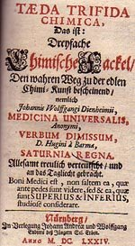
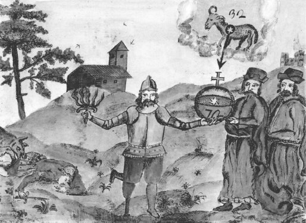
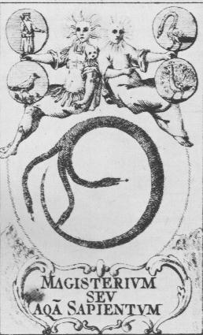
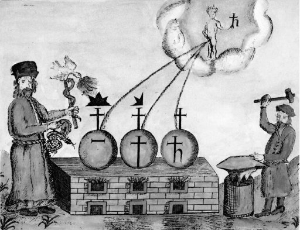
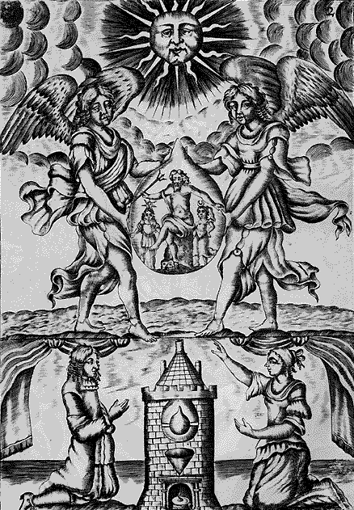
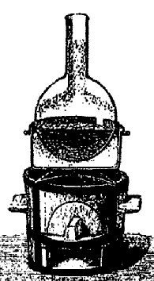

Huginus à Barma
ou
Le règne de Saturne changé en siècle d'or
revu le 10 février 2005
plan : introduction - préface de l'auteur - positions de philosophie hermétique [I - V] - De la nature ou sujet philosophique [VI - IX] - du Mercure des philosophes [X - XIV] - extraction et putréfaction du Mercure [XV - XIX] - du Mâle [XX - XXVI] - de la Femelle [XXVII - XXIII] - du Mariage [XXIV - LIV] - Arcane corralin [LV - LVI] - du Feu [LVII - LXVI] - au lecteur - la pierre de touche ou principe des philosophes qui doivent servir de règle pour l'oeuvre [I - XXXVI] - Pratique [du nitre philosophique - du sel volatil - du sel fixe - conjonction des trois sels - composition de l'oeuvre universel - usage de l'athanor pour cet oeuvre - Multiplication - Fermentation et préparation pour la projection -Note : les principaux sels du mercure vulgaire : protoxyde - precipite per se - sublimé corrosif - calomel - turbith minéral - cinabre artificiel et vermillon -
IntroductionOn ne sait qui a écrit ce livre ; Quoi qu'il en soit, il s'agit d'un traité complet sur la pierre philosophale qui traite, comme le Filet d'Ariadne, de la voie humide. Huginus à Barma est plusieurs fois cité par Fulcanelli : dans le Mystère des Cathédrales, d'abord p. 70 lors de l'allégorie de l'étoile qui signe la matière première, puis p. 125 lors de l'évocation du poids de nature et du poids de l'art. Notez que le traité est alors appelé Sigillum Sapientum. Fulcanelli écrit :
"Basile Valentin s'est contenté de dire qu'il fallait « bailler un cygne blanc à l'homme double igné », ce qui correspondrait au sigillum Sapientum d'Huginus à Barma, où l'artiste tient une balance dont un plateau entraîne l'autre selon le rapport apparent de deux à un."
Sigillum Sapientium
Enfin, p. 140, à propos de la voie humide :
"Pernety refuse de croire à cette duplicité de moyens, tandis que Huginus à Barma affirme, au contraire, que les maîtres anciens, les Geber, les Lulle, les Paracelse, avaient chacun un procédé qui leur était propre."
Dans les Demeures Philosophales, t.1, p. 411, Huginus est cité à propos de la nécessité de mortifier le Mercure philosophal, puis t.2, p. 62 où Fulcanelli envisage l'art et la manière de prendre la médecine ; enfin, t.2, p. 313 dans l'analyse du cadran solaire du Palais Holyrood d'Edimbourg où les grands auteurs enseignent que :
"le sel des métaux est la pierre des philosophes."
J. van Lennep ne cite pas ce traité dans son Alchimie. Décidément, Huginus à Barma garde son secret... Toutefois, on trouve quelques indices dans Ferguson [Bibliotheca Chemica, I, p. 424] :
HUGINUS A BARMA.
Saturnia Regna. S. M. T. F. P. Magisterium, id est, Aqua Sapientum, per positiones Hermeticas publicatum. See Taeda Trifida Chimica, 1674, p. 137.
Etliche Philosophische Schlüsse.
See Taeda Trifida Chimica, 1674, p. 284.
This translation contains two plates only. Huginus'tract was first printed at Paris in 1657. A hundred and twenty years later a person calling himself Pe. Th. An. . . .' tried to get a copy of the book in the libraries, but in vain, and he turned over hundreds of sale catalogues but never saw it mentioned. Observing that it was unknown to Lenglet Dufresnoy he had almost come to the conclusion that it was entirely lost, when he obtained it along with a number of others from a bookseller Pierre Derieu and reprinted it. It appeared in a small volume at Paris,. 1779, 12°, pp. 167 [1 blank], 3 plates, followed by a French translation in uniform style in 1780, pp. 192, 3 plates. In it, however, the above initials are written S. M. I. S. P., and the editor calls himself ' Pi. Th. An. . . .' Borrichius indulges in some persiflage at Huginus' expense. Petraeus says that Huginus was a certain Frater Paulinus, with the name Talberus, and he also notes that one or two plates are wanting in the German translation. Fuchs calls him Haginus von Parma, which is a curious misprint.
L'article Taeda Trifida Chimica renvoie à un traité d'alchimie où nous voyons cotoyer Le Trévisan et Huginus [Bibliotheca Chemica, II, p. 425] :

Taeda Trifida Chimica, das ist: Dreyfache Chymische Fackel, den wahren Weg zu
der edlen Chimi-Kunst bescheinend, nemlich Johannis Wolffgangi Dienheimii,
Medicina Universalis, Anonymi, Verbum Dimissum, D. Hugini à Barma, Saturnia Regna. Allesamt treulich verteutscht, und an das Tagliecht gebracht Boni Medici est, non saltem ea, quae ante pedes sunt videre, sed & ea, quae sunt Superius & Inferius, studiose considerare. Nürnberg, In Verlegung Johann Andreae und Wolffgang Endters defs Jüngern Sel. Erben. Anno M.DCLXXIV.
8°. Pp. [32] 3-303 [1 blank] (wants 1-2). Title red and black 2 plates.
This collection consists of the tracts following:
- J. W, Dienheim, Universal-Artzney, p. 7.
- Anonymi Verbum dimissum (Entdecktes Wort), p. 97. This is a German translation of ' La Parole delaissée, ascribed to Bernhardus Trevisanus.
- Huginus à Barma, Saturnia Regna, p. 137.
- Anonymi Testamentum Chymicum (Letztes Testament), p. 189.
- Huginus à Barma, Etliche Schlüsse, p. 285.
- H. Aquila, Thuringus, Eine sonderbare Lehre aus einem geschriebenen Buch, p. 297,
- Aus einem Schreiben Eduardi Kellaei, p. 300.
- Aus einer Epistel Eduardi Kellaei, p. 301.
Though it contains several tracts, Kopp has placed it, because of its title, with other collections of three tracts. It is also mentioned by him along with other books having 'lamp' or 'torch' for the title. Kopp, Die Alchemie, 1886, pp. 338, 386.
Vous me demanderez peut-être, mon cher ami, où est-ce que nous trouverons l'Eau ou le Magistère des Sages ? Puisqu'on lit dans Geber ; notre Eau est l'Eau des nuées [il s'agit de la rosée de mai, voir Mutus Liber, planche 4 et Aristeus]. Dans Aristote [le pseudo-Aristote du Livre IV des Météorologiques] : notre Eau est une Eau sèche [le dissolvant, utilisé dans la voie sèche], Dans Hermès : nous tirons notre Eau d'un menstrue sordide & puant [on en parle longuement dans la section du tartre vitriolé]. Chez Danthin : notre Eau se trouve dans les vieilles étables, les latrines & les cloaques, [il s'agit du salpêtre qui est des parties de Vénus ; mais ce n'est pas encore le salpêtre « philosophique ». Ce Danthin est encore connu comme Dastyne, Daustin, etc. voir Livre secret d'Artephius] & chez Morien : notre Eau croît sur les montagnes & dans les vallées [à propos de la graisse de terre, carbonate de chaux. Voir Entretiens de Calid et Morien].
Sachez que les insensés n'entendent pas ces paroles, ils croient qu'il s'agit ici du Mercure
[il s'agit d'éléments qui entrent dans la préparation du Mercure philosophique ; ils varient selon le minéral utilisé : l'un doit posséder de l'acide vitriolique et l'autre du potassium : un bon procédé, parmi bien d'autres, consiste à faire fondre ensemble du vitriol vert ou calciné en blancheur et de la crème de tartre qui apporte la base].
Remarquez bien cependant que ce n'est pas du Mercure dont les Philosophes parlent, mais d'une eau sèche qui rassemble tous les esprits minéraux, l'âme & le corps, en les rendant pénétrants, qui après les avoir rassemblés, les abandonne, se sépare d'eux & les laisse dans l'état de fixité.
[c'est exactement la définition du vieillard hermétique, qui devra, le temps venu, laisser place à plus jeune que lui : on parle ici de la voie sèche par volatilisation du fondant qui laisse, avec des résidus mercuriels, la Pierre au rouge]
Cette Eau se trouve dans toutes les choses qui sont au monde ; sans elle, tous nos efforts pour parvenir à la Pierre des Sages seraient inutiles. En effet comment pourrions-nous, sans son secours, procurer l'ingrés [l'ingrès correspond à l'entrée du soleil dans le signe du Bélier, signant, par cabale, l'époque du début des travaux] à nos matières préparées, c'est-à-dire, leur donner la faculté de se pénétrer l'une l'autre.
Dans la Pharmacie, on rassemble plusieurs simples, & on en exprime le jus. Si nous voulons faire une œuvre parfaite dans le genre, soit végétal, soit animal, soit minéral, il faudra que nous suivions cet exemple: aussi il y a dans toutes les choses une Eau sèche par la quelle elles se perfectionnent elles-mêmes ; c'est ce qui a fait dire à Galien que tous les mixtes dans les trois règnes ont leur propre médecine pour produire la pierre qui leur convient, sans y ajouter aucune chose étrangère. Si l'on veut doncfaire la pierre ou quelque fixation ou quelque conjonction, il faut la faire avec notre Eau sèche.
Les Teinturiers [allusion aux laveures de Flamel et aussi aux substances utilisées dans le blanchiment] nous présentent aussi un exemple à suivre ; ils prennent de la garence pour les draps qu'ils veulent teindre en rouge, & de l'alun. Le drap est le corps [c'est la toyson d'or de Trismosin ou encore la tunique de Nessus, voir planche 15 du Mutus Liber], la garence est l'âme [elle est assimilée au Soufre rouge, voir Livre secret d'Artephius], & l'alun est l'esprit [au sens d'Esprit universel : il est ici question de l'acide vitriolique]. En effet, sans l'alun la couleur ne pénétrerait pas le drap & ne s'y fixerait pas ; elle s'envolerait peu-à-peu, & le drap pâlirait ; car la couleur rouge est un esprit, & l'alun participe de l'esprit & du corps [par l'alumine, autrefois connue sous le nom de Terre de Samos ou terre de Chio ; au XIXe siècle, on l'appelait encore kaolin] ; d'où il arrive que lorsqu'ils sont réunis, ils se pénètrent mutuellement. Ou bien encore, prenez de l'eau de pluie, faites-y bouillir ces trois choses, & lorsque par l'ébullition l'alun & la couleur auront pénétré le drap ; vous le suspendrez, l'eau s'évaporera, & la couleur y restera fixe. Il en est de même de notre pierre. [il s'agit de l'une des plus simples allégories que nous ayons observées jusqu'ici] Quoiqu'on ait préparé les corps, l'âme & l'esprit comme il convient, s'ils ne se pénètrent pas l'un l'autre par le moyen de l'Eau, ils ne resteront jamais ensemble. De là cette multitude d'erreurs où tombent tant d'Artistes, parce qu'ils ne connaissent pas la nature.
Sachez de plus que la terre contient les semences de tous les êtres, leurs opérations & leurs vertus : aussi est-elle le réceptacle de tous les rayons & de toutes les influences du ciel ; elle est aussi imprégnée par les autres éléments & les autres cieux ; elle est le centre, le fondement, disons mieux, elle est la mère de tous les êtres, puisqu'ils prennent tous naissance dans son sein ; car on sait qu'il suffit de l'exposer au grand air, après l'avoir suffisamment purifiée, pour qu'elle soit féconde & imprégnée des opérations & des vertus célestes, au point qu'elle pourra alors produire d'elle-même des herbes de toute espèce, des vermisseaux, des insectes & des atomes ou paillettes métalliques. En elle se trouvent un grand nombre d'Arcanes, & l'esprit de vie, qui est le premier né de la nature céleste, y développe déjà son activité.
II y a aussi dans son centre une terre vierge composée de trois principes ; & la loi de la nature est celle que si vous savez séparer ces trois principes, & les rejoindre ensuite à la manière des Philosophes, vous serez possesseur du plus grand des trésors. Parlons plus clairement : cette terre contient dans son sein trois principes sensibles. Le premier est le nitre philosophique que la terre a conçu par les influences du soleil, de la lune & des autres astres. [il s'agit de l'alkali fixe, et non réellement du salpêtre ou nitre vulgaire ; mais le salpêtre joue un rôle de premier plan dans l'oeuvre] Car si les rayons qui émanent du soleil sont plus chauds, il en résulte une plus grande quantité de sel nitre central ; ce qui cependant doit s'entendre non du nitre commun, mais du nitre philosophique. Le second principe, qui est caché dans cette terre vierge, est l'esprit céleste & invisible de la nature, c'est-à-dire, l'esprit du monde renfermé dans un sel subtil [il doit s'agir ici de l'acide vitriolique]. Le troisième est un sel fixe [il s'agit de l'alkali fixe de Lémery autrefois connu sous le nom d'huile de tartre faite par défaillance] qui est comme le réceptacle des deux corps précédents que Dieu a mis & comme plantés dans son sein : ainsi ces trois sels sont contenus & cachés dans cette terre.
Peu de paroles suffisent au Sage, d'ailleurs les explications qui suivent vous présenteront la nature sous un si beau jour, elles la mettront si nettement sous vos yeux, que rien ne sera plus facile que de la connaître. Lisez, méditez, priez & gardez le silence.
Votre ami, H. A. B.

Speculum veritatis, XVIIe
LE RÈGNE DE SATURNE changé en SIÈCLE D'OR
POSITIONS de Philosophie Hermétique
I.
Ceux qui ne croient pas la possibilité de l'œuvre divine d'Hermès, qui en ignorent la réalité, ou qui la méprisent, n'ont point encore adoré la majesté de la nature créatrice dans l'un de ses plus beaux Ouvrages, & n'ont pas suffisamment réfléchi sur les opérations de la nature créée. L'éclat du soleil & de la lune frappe inutilement leurs yeux, ce sont des aveugles sur qui je ne dis pas la lumière naturelle, mais la splendeur de la grâce divine, ne fait aucune impression.
En effet les Philosophes auraient-ils dit que cette œuvre était un don de Dieu [c'est-à-dire un don du soufre : qeion - qeioV], & qu'elle ressemblait à la génération des animaux,s'ils n'avaient pas jugé que le concours de la faveur céleste & de la nature était nécessaire pour sa production ? Et si le simple paysan n'ignore pas que Dieu & la Nature abhorrant la solitude, ont mis dans tous les êtres une semence qui leur est propre, & par laquelle ils se reproduisent & perpétuent leur espèce ; comment des Philosophes, des Sages, qui cherchent à approfondir la Nature & ses secrets, pourraient-ils former des doutes sur cet objet ?
II.
Mais les Sophistes qui ont cru parvenir à une connaissance parfaite de ce mystère sans la révélation divine, ou sans les conseils d'un guide expérimenté, se sont plongés dans des ténèbres stériles, & n'ont reconnu que l'un de ces deux principes, ou même les ont méconnus tous les deux ; d'où il est arrivé que ne rendant point à Dieu la gloire qui lui est due, & méconnaissant le pouvoir de la Nature, ils ont honteusement profané l'alliance qui réunie l'homme à l'un & à l'autre, ils ont violé les lois de la nature, ils ont souillé le pur par le mélange de l'impur, & n'ont enfanté que des monstres. Soit qu'ils aient négligé ou qu'ils n'aient pas connu l'Electre de Paracelse, [allusion au Rebis] ils n'ont suivi que leur propre sentiment, se sont livrés aveuglément à leurs folles idées, & ont couru avec avidité vers la possession de notre œuvre & de ses richesses, sans se proposer l'unique but qui soit digne d'elle, c'est-à-dire, la gloire du Très-Haut. Mais que leur est-il arrivé ? Ils ont passé leur vie dans des chimères, ils n'ont recueilli de leurs travaux que de la fumée, & ils n'ont eu que des larmes amères à répandre sur la dissipation de leurs biens, & sur la honte dont ils se sont couverts. [les chimères, les larmes, la honte sont des mots cryptés qui cachent des aspects de l'oeuvre ; nous laissons au lecteur le soin de trouver ces arcanes]
III.
D'autres Artistes d'un esprit plus pénétrant se sont un peu distingués des Sophistes, ils ont connu la vraie matière philosophique, mais ils n'ont pas su la mettre en usage, parce qu'ils lisaient tantôt un Auteur, tantôt un autre, espérant de trouver chez eux la manière de l'employer. [Limojon de saint Didier (1, 2, 3) ainsi que Jacques Tol ont écrit là-dessus] Mais les Anciens n'ont pas tous préparés cette matière de même, les uns ont eu recours à des opérations longues & même dangereuses ; d'autres ont pris une voie plus courte & plus sûre. [l'opération longue désigne classiquement la voie humide; la courte désigne la voie sèche. Fulcanelli, dans sa trilogie, envisage avant tout la voie sèche au creuset ce qui exclut en principe les sels mercuriels] C'est pourquoi ceux qui veulent se guider par les Anciens, croient pouvoir s'instruire dans Raymond Lulle, des poids; dans Avicenne, des fermentations, dans le Trévisan, du feu & dans Paracelse, des projections, etc. ; ils se trompent, chacun d'eux a un procédé qui lui est propre, c'est pourquoi si Geber vous paraît parler autrement que Raymond Lulle ; si vous ne trouvez pas dans Morien ce qui est dans Arnaud de Villeneuve, ni dans Paracelse ce qui est dans les autres Philosophes, ne les accusez d'erreur ni les uns ni les autres : tous sont parvenus au but par différents moyens, quoiqu'en opérant sur la même matière. [c'est l'une des raisons, la multiplicité des moyens, qui a mis Jung sur la piste de l'intrusion d'éléments inconscients de la psyché nichés dans la materia prima même : l'alchimiste effectue une projection de ces éléments et le but consiste en l'individuation qui est une sorte de cure, de thérapie, voir Aurora consurgens et Ripley Scrowle]

(le Magistère ou l'Eau des Sages, figure première
du Règne de Saturne changé en siècle d'or)IV.
Si les destins vous appellent à cet honneur, si vous imitez soigneusement la Nature, tout vous réussira suivant vos désirs, vous marcherez sous les auspices de la Divinité, & la Nature, qui est la servante de sa majesté infinie, s'empressera de vous favoriser dans vos travaux. Prenez la donc pour maîtresse & pour modèle, imitez la [cette idée est à l'origine même de l'alchimie, voir Jung, Psychologie du Transfert] ; suivez ses traces, & examinez soigneusement les causes, la matière, les mouvements & le but de l'œuvre. Tout ce qui pourra vous arriver d'heureux, rapportez-le à la gloire du Très-Haut & à l'avantage du prochain ; car c'est là la vraie & unique vue des Philosophes.
V.
Mais puisque je me suis proposé d'indiquer le moyen le plus court & le plus convenable à la Nature pour chasser les maladies & l'indigence, je parlerai en peu de mots du Magistère universel des Philosophes, que le Tout-Puissant, par un pur effet de sa libéralité, a donné aux mortels, & je le ferai avec tant de sincérité, qu'aucun de ceux qui m'ont précédé dans la même carrière, n'aura consacré ce don de Dieu [c'est-à-dire ce don du soufre, puisque les matières premières sont des sulfates, corrompues par ce soufre puant qu'il faut leur ôter] à la postérité avec autant de franchise que moi, car ce que j'ai appris sans fiction, je le communiquerai sans envie. Chassez surtout de votre esprit les extravagances des Sophistes, toutes ces fixations, sublimations, congélations, amalgamations, précipitations, distillations & préparations des mercures, des antimoines, des sels, des tartres, des herbes, des animaux ; opérations inutiles, auxquelles se livrent tant de faux Artistes suivis de la foule de leurs disciples, Mais marchez dans la voie uniforme de la Nature, qui est la plus sûre & la plus courte.
De la Nature ou Sujet Philosophique
VI.
Ayant donc à traiter des parties essentielles & intégrantes du Magistère, je commencerai par la matière, dont la recherche a coûté tant de travaux inutiles
[Le verbe tomber renvoie à cado et cassito [d'où : cassus : vide, vain, inutile] - qui nous explique que tant de textes alchimiques commencent par des lamentations comme quoi les travaux ont été inutiles ou vains, cf. en particulier l'Hermès Dévoilé de Cyliani - à rapprocher de casses = rets, filet de chasse, toile d'araignée et bien sûr de cassiterinus : d'étain ainsi que de cassito : dégouter et cado (=cassito) : tomber. Mais cado veut aussi dire "dégoutter" et implique une idée de fluidité ; il se rapproche de fluere (couler) par référence peut-être au spath fluor (fluorine). Le lecteur, ici, aura intérêt à consulter la section réincrudation où nous approfondissons particulièrement ce point de science.]
à une infinité d'Artistes. Mais ceux qui, par une grâce spéciale du Très-Haut, sont parvenus à la connaître, entraînés les uns par l'envie, & les autres guidés par la crainte qu'ils ont eue qu'on ne vînt à en abuser, n'en ont parlé dans leurs écrits qu'en la déguisant : tous l'ont transmise à la postérité en la cachant sous tant de voiles, qu'il ne faut rien moins que la pénétration d'un Œdipe pour la reconnaître, ou même pour discerner ses traits. D'autres même ont fait vœu à Dieu & à la Philosophie de la tenir à jamais renfermée sous le sceau impénétrable d'Hermès. Je vous proposerai cependant à ce sujet deux maximes fondées l'une sur l'autorité d'Hermès, & l'autre sur la raison. Si vous ne les comprenez pas, si elles ne chassent pas les ténèbres qui couvrent vos yeux, vous êtes encore aveugle pour bien du temps, peut-être pour toujours.
VII.
La première est dans Hermès (liv. 7 de ses Traités fur les ferments & la fermentation ), où l'on lit que le ferment est de la même substance que sa pâte, & bien mieux, que le ferment de l'Or est Or, & le ferment de la Lune est Lune.
La seconde est fondée sur cet axiome naturel, que la substance que l'on cherche est la même que celle d'ou l'on doit la tirer. Arnaud de Villeneuve assure la même chose au livre premier de son Rosaire, ch. 7, quoiqu'il s'exprime autrement :" notre médecine dit-il, se tire des choses dans lesquelles elle est."
VIII.
Hermès s'explique encore plus clairement autre part, pour faire entendre qu'il faut l'extraire de la substance des planètes terrestres, c'est-à-dire, des métaux parfaits. Le Soleil & la Lune, dit-il, sont les racines de notre art ; c'est pourquoi le fils d'Hamuel [il s'agit de Senior Zadith, in Senioris Zadith, filii Hamuelis tabula chimica, marginalibus adaucta, Theatrum Chemicum, t. V, pp. 191-240] enseigne que la pierre est une eau congelée dans le Soleil & la Lune. Le Trévisan la fait consister dans deux substances mercurielles qui viennent d'une même racine. Suivant Geber, cité par Zachaire, c'est une eau visqueuse fécondée par l'action de son soufre métallique. Paracelse ( au livre des Transmutations métalliques, chap. 13 ), dit que c'est l'Electre ou le cinabre, c'est-à-dire, un composé de deux minéraux, savoir, le soufre & le vif-argent, car l'Electre, ajoute ce Philosophe, est-il autre chose qu'un mélange de deux ou plusieurs minéraux, ou bien de deux ou plusieurs métaux ? [l'electrum était connu des Anciens comme un alliage d'or et d'argent] Pourquoi donc le soufre du Soleil conjoint par un artifice philosophique avec le mercure de la Lune, ne ferait-il pas l'Electre ? Pourquoi ne ferait-il pas le Cinabre (1) ? Et certes un lion engendre un lion, les gens forts & robustes ont des enfants qui leur ressemblent, & les aigles généreuses ne donnent pas le jour à une faible & timide colombe.
(1) Je n'aurais garde d'arrêter les yeux du Lecteur sur cette note, pour lui faire remarquer que ni Paracelse, ni notre Auteur, n'entendent certainement pas parler ici du cinabre ordinaire, si je ne savais que cette substance a encore de nos jours ses partisans zélés qui le prennent pour le vrai sujet de la Pierre, & qui en font en effet la base de leurs travaux. [il s'agit du Dragon rouge, sur lequel travaillent des alchimistes contemporains] Ils ont beau se rassurer dans leur opinion, en citant différents passages de quelques Auteurs qui la favorisent, & en nous disant que cette matière contient naturellement le soufre & le mercure, ou plutôt qu'elle est tout soufre ou tout mercure ; que la Nature, par la réunion de ces deux substances dans le même sujet, enseigne à l'Artiste la combinaison qu'il en doit faire dans son œuvre, c'est-à-dire, qu'elle révèle ainsi la solution d'un grand problème, celui des poids. Ils n'en sont pas moins dans l'erreur, & peut-être qu'ils n'en sortiront pas, malgré l'avis que j'ose leur donner, car je sais quelle est la force de la prévention.
S'ils persistent donc, qu'ils tâchent de nous expliquer comment le cinabre ordinaire contient, de même que celui dont parle Paracelse, le soufre de l'Or conjoint au mercure de la Lune par un artifice philosophique. Mais plutôt s'ils veulent devenir sages, qu'ils considèrent que le mercure & le soufre qui sont dans leur cinabre, ne sont que le soufre & le mercure ordinaires, deux matières hautement condamnées par les vrais Philosophes, ridiculisées même par quelques-uns d'entre eux. [l'auteur veut parler ici du cambar ou kinnabariV] Quant aux Auteurs dont il leur plaît de s'appuyer, ils doivent examiner attentivement si ces Coryphées [sommet, point élevé], d'après lesquels ils pensent, ont pour eux le suffrage de l'Ecole d'Hermès, s'ils sont généralement regardés comme Adeptes, & si dans ce cas leur sentiment doit balancer tout ce que les Raymond Lulle, les Basile Valentin, les Cosmopolite, les Riplée [voir Compound of Alchemy et Ripley Scrowle] & tant d'autres, nous ont enseigné tantôt clairement, tantôt sous le voile des similitudes & des allégories, touchant la vraie matière ou sujet philosophique. C'est là tout ce que j'ai à dire aux Sectateurs du cinabre commun.Mais les Amateurs de la science qui n'ont point encore l'esprit prévenu, ne prendront d'opinion sur cet objet fondamental, que d'après la saine doctrine qui se trouve consignée dans un si grand nombre de bons livres ; ils tâcheront de démêler les passages énigmatiques qui touchent adroitement ce point, & les compareront avec ceux qui en parlent ouvertement ; & surtout ils n'oublieront pas quelles sont les matières proscrites par les Philosophes. Je ne les rappellerai point ici ; mais pour faire voir d'autant plus que ceux qui sont entrés dans le sanctuaire de la science, tiennent un langage uniforme, je rapporterai ici quelques trais d'un Auteur anonyme, que le Trévisan, en deux différents endroits de son livre de la Philosophie naturelle des métaux, compte dans le nombre des Adeptes ; c'est le véridique ouvrage qui n'a jamais été imprimé, & que je croyais perdu comme plusieurs autres que l'on trouve cités par les anciens Auteurs ; mais je vois, par un manuscrit qui est tombé entre mes mains, que le hasard l'a sauvé jusqu'ici de l'injure du temps.
" Ils font aucuns assez lettrés (dit cet Auteur) se réputants de grande estimation par l'abondance de leurs biens temporels, qui cherchent cette science, & œuvrent de plusieurs espèces, mettant leur entendement en sels, alums, voire ( verres ), soufre, arsenic & en sang humain ou de bêtes, en urines, pierres, œufs de gelines, herbes ; en or, argent, cuivre, Fer, plomb, étain ; en plantes, superfluités, & autres choses trop diverses ; & conjoignent ces choses l'une à l'autre en broyant, sublimant, calcinant , distillant, résolvant & fixant souvente fois ; & cuydent (pensent) en labourant ainsi, venir au-dessus de leur intention, & extraire d'une de ces choses ou de plusieurs, aucun bien. Mais c'est une sotte fantaisie de nulle valeur. Et si aucuns qui cuydent faire l'œuvre avec or & mercure, ou soufre avec argent...., & mettent mercure avec or, ou soufre avec argent, & le ferment ( mettent ) en terre, & cuydent que ce qu'ils pensent soit vrai ; ceux-ci sont remplis de grande sottise. Les autres veulent fixer mercure par soufre, alun ou eaux, en le tenant longuement au feu ; ou par ordures de métaux, ou autres manières innumérables, qui est chose impossible & contre raison, etc. " [Comme tous les bons auteurs, le Trévisan n'omet pas de parler des substances utiles en les mixant littéralement à son discours. Nous insisterons sur la référence à l'alun d'où l'on peut tirer le sel de la Lunaire mais d'où l'on peut tirer aussi l'acide vitriolique qui était réputé être l'esprit universel chez les anciens chimistes - Quant aux ordures des métaux, il s'agit des chaux métalliques, qui sont effectivement des sels corrompus -]
L'Auteur anonyme tombe ensuite sur les Sophisticateurs ; il serait trop long de citer ici tout ce qui mériterait d'être rapporté ; mais il revient à plusieurs reprises sur la matière de l'œuvre ; il répète, d'après Morien :
"Comment attendrais-tu aucun bien en chose qui est légèrement gâtée & consumée en la chaleur du feu ? Mais considère si tu pourras trouver aucune matière pure & nette ; autrement laisse ton ouvrage, car aussi bien n'aura point d'efficace.. ... Sache donc que cette chose est de peu de prix envers ceux desquels elle est inconnue ; & si elle est chose commune, vile & abondante ; & en peuvent aussi bien avoir les pauvres comme les riches, & est vendue publiquement pour l'argent & monnaie. " [Voyez la section chimie et alchimie sur les caractères des matières premières. Les Adeptes ont toujours professé que leur matière ne coûtait que peu d'argent et que le riche la possédait aussi bien que le pauvre ; nous dirions même que le pauvre devait en posséder plus à l'époque où le texte de Morien a dû être rédigé -]
C'est ainsi que s'exprime le véridique sur cet objet important. Plus bas il ajoute :
"Prenez donc la pierre visible & la pierre invisible, etc. ".
Ceux qui seront bien aises de jeter les yeux sur les passages du Trévisan, ou il est fait mention du Véridique, n'ont qu'à ouvrir le second tome de la Bibliothèque des Philosophes Chimiques ( édition de 1741 ), aux pages 334 & 384.
IX.
Mais de même que l'homme & la femme ne peuvent engendrer qu'au moyen de leurs semences ; de même notre mâle, qui est le Soleil, & notre femelle, qui est la Lune, ne concevront jamais sans la semence ou sperme tant de l'un que de l'autre. De là les Philosophes ont conclu qu'il fallait nécessairement ajouter à ces deux un troisième être animé, savoir, la semence du mâle & de la femelle chimiques, semence sans laquelle l'œuvre est absolument inutile & nulle. Or, il n'y a pas d'autre sperme de cette espèce que notre mercure ou Evestre (2) ; j'entends par ce mot ce que les quatre éléments de ce monde contiennent de perpétuel & d'éternel, & cet esprit vivifiant & très pur qui se répand & se promène dans tout l'univers.
(2) Evestre, mot de l'invention de Paracelse. On voit la signification qu'il lui a donnée ici, mais dans d'autres endroits de ses ouvrages, il lui a fait signifier autre chose. Il faut supprimer ici dans le texte latin, le point & la virgule, qui ont été mis par mégarde après aeternumque [evestre provient peut-être de evestigatus qui a le sens de « découvert après de multiples recherches », ce qui qualifie bien le Mercure]

Speculum Veritatis, XVIIe
X.
Le Mercure des Philosophes est produit par l'écoulement & le concours anatique [ana = un] des quatre éléments agissants soit à la surface de la terre, soit dans l'air, quoique leur effet soit plus sensible pour nous sur toute la surface de notre globe, ou plutôt sa naissance est déterminée par le concours des éléments, & il reçoit du ciel & des astres le complément de son existence : telle est l'origine de ce fils, disons mieux, de ce premier né de la nature, de cet esprit toujours agissant, toujours en mouvement, qui se répand partout, qui pénètre tout, qui réunit, porte & concilie dans son sein le germe & les principes de tous les êtres. Il ne peut être arrêté & dompté, de manière à tomber sous nos sens, que par les seuls liens des éléments. Et c'est pour cette raison que Neptune l'introduit intimement dans le sein & les entrailles de Saturne [Mercure philosophique] par le moyen des pluies, de la rosée, de la neige, des gelées blanches, des brouillards, des éclairs, etc. qui lui servent extérieurement de véhicule, ( ce qui a induit des Sophistes à prendre follement les cristaux de Saturne [voir symboles alchimiques, II] pour le sujet de leurs opérations ). Cependant il ne se montre jamais nulle part pur & nu, à moins que l'art ne lui enlève radicalement les souillures qu'il a contractées par l'impureté de la matrice des éléments. [Sur les quatre éléments, voir Chevreul, Atlas - pour la ronde des éléments dans la genèse de la pierre, voir Atalanta fugiens - il faut rappeler qu'au départ, l'Artiste prépare le Mercure commun, mais il n'obtient le Mercure philosophique que par l'artifice de la nature. La cabale hermétique indique que le ciel et les astres participent à ce mouvement : il fut entendre ici la rosée de mai et les chaux métalliques -]
XI
Ce n'est pas que les éléments ne soient très purs dans leur centre, mais comme ils ne peuvent nous être rendus sensibles dans leur pureté que par le moyen de leur matrice, qui leur sert comme d'écorce, il n'est pas surprenant que le vêtement ou enveloppe de notre Mercure soit souillé de tant d'ordures qui le tiennent dans leurs entraves, soit lié & garrotté de tant de chaînes, qu'il ne puisse être aperçu qu'à la clarté du flambeau philosophique. [Cela explique la sentence lapidaire de Basile Valentin quand il dit qu'il faut « blanchir Latone et rompre ses livres ». Mais nous avons déjà fait voir qu'il y avait eu contre sens sur le mot libros, qu'il faut lire liberos -]
XII
Notre Mercure est un être très pur & sans tache, il est blanc & rouge ; Paracelse & Isaac Hollandus l'ont appelé avec raison Eau de Paradis, car il arrose toute la surface de la terre ; se divisant en quatre sources, il se répand dans toutes les régions, & déploie son activité & ses forces sur les trois règnes. Si vous comprenez ceci, vous tenez tout. Mais si vous avez besoin d'une plus grande lumière à son sujet ; vous la trouverez dans la solution philosophique de tous les individus de la Nature, où notre Mercure se manifeste d'une manière sensible ; car la dernière opération de la Nature, relativement à nous, est la première pour la Nature elle-même. [Le Mercure est donc, lorsqu'il n'est pas excité par le feu vulgaire, une EAU SÈCHE QUI NE MOUILLE POINT LES MAINS. Lorsqu'il est animé, il a le pouvoir de dissoudre tous les métaux sans être dissolvant comme les acides et les bases. C'est donc essentiellement par sa viscosité qu'il agit et par un pouvoir minéralisateur, qui en fait un véritable ferment -]
XIII
Ce Mercure philosophique est sec & humide, volatil & fixe, dans une proportion si favorable à l'union de ses parties, qu'il est donné aux seuls enfants d'Hermès de distinguer en lui ces différentes qualités. Les Philosophes considérant que son enveloppe terrestre est extrêmement limpide & diaphane, ont été surpris que la rougeur fût cachée dans une si grande blancheur. Cela les engagea à lui donner le nom de Ciel, non seulement parce qu'il embrasse & contient l'universalité de tous les êtres, & qu'il reçoit dans son sein toutes leurs essences avec leurs modifications, ce qui fait qu'il attire à lui le principe ou le sujet de tous les changements qui se font ici bas, qu'il lui redonne la vie & s'envole après cela. Mais encore parce que tout ainsi que le ciel, qui est entièrement diaphane, contient en soi un esprit ou un soufre ou une quintessence très dépurée, par le moyen de laquelle les astres se meuvent & répandent leur lumière ; de même, notre Mercure cache dans le vêtement qui lui sert d'enveloppe, un esprit éthéré, qui est le vrai soufre de nature. Ce qui a fait dire aux Philosophes :
" notre Mercure contient son soufre ".
Ces paroles ne sont pas exactes ou du moins, elles peuvent tromper l'ignorant parce qu'elles valent dans deux situation tout à fait différentes, qui dépendent du stade de l'oeuvre où l'on trouce le Mercure. Au sortir de la mine - quand il y en a une - le Mercure est dans un état de corruption totale. Il est, de plus, hydropique. La première opération consiste donc à lui ôter cette hydropisie, chose facile à obtenir par un feu ménagé. On obtient alors une matière qui tient, par son aspect, du champignon. Dans cet état, il est parfaitement exact que le Mercure se trouve mêlé au Soufre. Mais à quel soufre et dans quel état ? Voila des questions auxquelles les alchimistes n'ont jamais apporté de réponses -]
XIV
D'ailleurs tous les astres de l'Astronomie inférieure brillent en lui, & deviennent spirituels ou volatils par son moyen, parce qu'il les purifie & délivre de leur nature terrestre & féculente, & les change en une semence convenable & exactement pure. C'est donc un vrai ciel, disons mieux, c'est l'esprit de tout l'univers & sa quintessence, car il a la force du feu, & son origine est céleste. II ne se manifeste que lorsqu'on lui a enlevé & qu'on a séparé de lui ses éléments ou parties les plus grossières. Il faut donc le purifier, après quoi il n'a besoin d'autre chose au monde que de devenir mûr :
" Purifiez-le, dit Paracelse, & conduisez-le à sa maturité".
[C'est-à-dire que les chaux métalliques s'y dissolvent. C'est ce qui est exprimé par la purification et la délivrance, ainsi que la transformation en semence. Une fois les chaux infusées dans ce fondant, le Mercure contracte le force du feu car il détient en puissance le rayon de soleil que l'Artiste doit faire prisonnier dans le corps de la Lunaire -]
Extraction & putréfaction du Mercure
XV
Recevez cette matière telle qu'elle est en sortant de son chaos, ayant la couleur verte des plantes, séparez en par des calcinations & des solutions répétées, les parties salées, alumineuses, nitreuses, vitrioliques & terreuse.
[sont nommés ainsi, notez-le bien quatre bases que contiennent les matières premières, soit : l'alun, le salpêtre, le vitriol vert et l'argile ; le vitriol vert peut être remplacé par du gypse ou de l'alun ; le salpêtre peut être remplacé par de la crème de tartre]
On appelle les opérations qui mènent à ce but, les premières sublimations philosophiques du Mercure. Lorsque cela sera fait, vous aurez un corps céleste qui renfermera une âme très pure ; puisqu'il se sera dépouillé de ses éléments les plus grossiers, & surtout de ses éléments terrestres, & qu'il aura perdu sa viscosité & sa salure ; car le sel est une matière toute terrestre. [on obtient le Soufre blanc, le Soufre rouge et Diane aux cornes lunaires]
XVI
Paracelse a donné à ce corps ainsi purifié le nom d'Autruche naissante dans la terre, & à son esprit, celui d'Estomac de l'autruche qui naît dans la terre. [voir Légende de Siegfried et Mylius, Philosophia Reformata] Pour avoir cet esprit, ramenez l'Autruche dans son chaos, dans ce chaos où elle était primitivement enfermée, & dans lequel les éléments tenaient caché & emprisonné comme dans un antre secret, ou dans une caverne, cet admirable esprit de vie, qui est un vrai Protée & le véritable Panurge ou Agent universel. Cet esprit est la Lunaire de Raymond Lulle, le Sang de dragon d'Albert le Grand, la Saturnie de Basile Valentin, l'Esprit de vin d'Arnaud de Villeneuve. Mais son propre nom est le Mercure des Philosophes, le Vinaigre très aigre, le Lait de la vierge, l'Eau pontique, l'Eau sèche qui ne mouille pas les mains. [le Mercure se présente donc - du moins par la voie sèche - sous une forme saline, friable et blanche; voir Artephius, Turba et Senior in De Chemia]
XVII
Cet ouvrage au reste exige absolument une savante manipulation de la part de l'Artiste, qui doit connaître aussi les vases, les instruments, le régime du feu, etc. C'est pourquoi, si vous ne connaissez pas déjà ce travail par votre propre expérience, ou s'il ne vous a pas été montré par quelqu'un, il vous sera très difficile de distinguer ce que vous devez séparer, rejeter ou recueillir. Si cependant vous avez les qualités que doit avoir un véritable enfant d'Hermès, la saine philosophie vous instruira & sera votre guide. Mais pour savoir si ce que vous avez réservé est bon, mettez-y dedans tel corps que vous voudrez ; si ce corps est réduit à son premier mercure en conservant ses qualités & ses teintures spécifiques, soyez sûr que vous avez trouvé ce que vous cherchiez ; si non, vous avez manqué votre opération. C'est là ce qui a fait dire aux Philosophes :
" faites le Mercure par le moyen du Mercure".
Vous observerez d'ailleurs que notre Mercure endurcit les choses molles, amollit les dures, fixe les volatiles, & volatilise les plus fixes ; il donne la mort aux choses vivantes, & vivifie & ressuscite les mortes : il est humide & sec, il sèche les choses humides, & humecte les sèches. Les Sages savent bien que s'il n'avait pas toutes ces propriétés, nous nous servirions inutilement de lui dans notre Magistère. [il s'agit d'un fondant alcalin; l'auteur ne dit là rien de nouveau et son texte est une compilation honnête des idées professées par les vieux auteurs, en particulier l'anonyme du Rosarium Philosophorum]
Le Ciel produit les mêmes effets, puisque tantôt il humecte la terre, & tantôt il la sèche ; tantôt il la refroidit, & tantôt il la brûle, etc. Ce Mercure agit donc de la même manière sur les matières auxquelles on le joint : & ainsi le Ciel voyage dans ce bas monde.
XIX
Mais pour vous faire connaître plus clairement sa nature, vous n'avez qu'à considérer la figure de mon cachet ou sceau, dans laquelle j'ai renfermé cet ouvrage en entier avec toutes ses parties. Vous y voyez deux pyramides qui se réunissent & s'embrassent mutuellement, & leur concours fait voir les caractères des quatre éléments de la même manière que les
Philosophes les représentent. La pyramide solaire, qui a cette forme , désigne le feu, la lunaire, l'eau. La pyramide lunaire coupant la solaire de cette manière , représente l'air, & la solaire traversant de même la lunaire , est le signe de la terre. Vous conjecturerez delà que ce n'est pas sans cause que les Philosophes ont inventé ces caractères, qui sont comme un résultat du mariage ou réunion des choses supérieures avec les inférieures. De plus, le Soleil est le mâle, la Lune est la femelle, & le D qui participe de la nature des deux, les lie & les conjoint l'un a l'autre [l'eau pontique] ; car, comme je l'ai déjà dit, il est tout à la fois volatil & fixe, & il est le centre & la racine de l'un & de l'autre. Ce que je viens de dire n'a rapport qu'à l'Astronomie inférieure, mais dans l'Astronomie supérieure, le Mercure est la production du grand monde, son père & sa mère sont le Soleil & la Lune, du sein desquels il découle, c'est pourquoi il engendre & il est engendré. Ceci donne l'explication de ce que disent les Philosophes :
"notre Mercure est engendré par les parents, & il est plus ancien qu'eux ".
J'en dirais davantage à ton sujet, s'il était permis de le faire. Mais ce que vous venez de lire sera plus que suffisant, si vous vous attachez à le comprendre.
XX
Les Sages donnent le nom de Mâle dans cette œuvre aux parties fixes, & celui de Femelle aux parties volatiles : le mariage spagyrique est le résultat de leur conjonction. Ce n'est pas qu'il y ait en eux aucune marque ou aucune ressemblance de notre sexe, mais comme entre le mâle & la femelle de chaque espèce, il y a un certain rapport magnétique pour la conservation & l'augmentation de l'un & de l'autre dans sa propre espèce ; de même entre les parties fixes & les parties volatiles de notre œuvre, qui proviennent de la même racine, il y a un aimant, une vertu attractive, qui tend à conserver & augmenter les unes & les autres, & à perpétuer leur espèce.
XXI
Paracelse appelle Terre Adamique les parties fixes, car tout ainsi que Dieu voulant créer le plus beau de ses ouvrages dans le genre animal, c'est-à-dire Adam, se servit d'un limon rouge le plus noble & le plus pur, de même il employa la terre rouge la plus noble pour la production de notre Soleil dans le Règne minéral. C'est ce qui a autorisé les Philosophes à dire que Dieu n'a rien crée ( si l'on en excepte l'homme ) de plus noble que notre Soleil, c'est-à-dire, que l'or, qui est la plus fixe de toutes lessubstances minérales. Mais les Philosophes se servent-ils de l'or du vulgaire ou d'un autre or plus secret & plus caché ? Vous pourrez d'autant plus hésiter sur la décision de ce point, qu'ils excluent de l'œuvre l'or vulgaire qu'ils disent mort & sans vie, ce qui est très vrai. Cependant ; si de ce caillou froid & glacé nous tirons de la flamme & du feu, nous reconnaîtrons peut-être, comme l'a dit Augurell :
"Que la semence de l'or est dans l'or, quoiqu'elle y soit profondément cachée, & que nous ne puissions l'en tirer que par un long travail."
[Sur la terre adamique, voyez : 1, 2, 3, 4, 5, 6, 7, 8, 9, 10, - sur Augurelle, voir 1, 2, 3, 4, 5,]
XXII
Observez qu'avec un morceau de la chair des animaux, & qu'avec les feuilles des plantes, il est impossible de reproduire l'espèce animale ou l'espèce végétale, il en est de même de la matière des métaux. Vous conclurez de là que pour multiplier l'espèce des différents êtres qui existent dans la Nature, il faut nécessairement recourir à leurs semences propres, & en séparer les superfluités en leur conservant les formes qu'elles ont reçues primitivement des mains du Créateur, car nous rejetons les feuilles, les troncs, les chairs, la moelle, les os, les membranes, &c. quoi que toutes ces choses aient servi d'instrument pour produire cet astre central & vivifiant, qui est le vrai conservateur de l'espèce soit végétale, soit animale. Vous devez vous conduire de même pour les métaux.
XXIII
Vous remplirez pleinement cet objet, si vous réduirez le Soleil en Soufre & en Mercure, qui sont sa première matière on substance, ou ce qui est la même chose, si par le moyen de notre Mercure & par un artifice secret, mais connu des Philosophes, vous ramenez le Soleil à l'état dans lequel il avait été premièrement mis par la Nature, c'est-à-dire, si vous le réduirez en un corps très brillant [stibew, marmaroV, argoV] & diaphane. Pour éclaircir davantage ce point, je citerai les deux maximes suivantes qui le mettent dans tout son jour. Elles sont prises dans le livre de Paracelse, de la Généalogie des Minéraux, c.21. Ce Philosophe y enseigne la production de l'Or, & en expose la première matière avec plus de clarté qu'on ne l'ait encore fait jusqu'à ce jour ; mais quoique cette matière soit vraiment la première, elle est cependant la dernière dans la réduction qui se fait par le moyen de notre Mercure. [il s'agit de l'humide radical métallique]
XXIV
L'Or est engendré du Soufre le plus pur, parfaitement sublimé par la Nature, délivré de toutes les fèces & de toutes ses immondices, & élevé à une si grande transparence qu'aucun corps entre les métaux ne peut monter à un plus haut degré de pureté. Ce Soufre est une partie de la première matière de l'Or. Les Alchimistes seraient en droit de se livrer à la joie, s'ils avaient su se le procurer tel qu'on peut le trouver en effet, lorsqu'on le cherche dans sa propre racine ou sur l'arbre qui le porte ; car il est le vrai Soufre des Philosophes, dont se fait l'Or, & il ne faut pas le confondre avec cet autre soufre qui donne naissance au fer & au cuivre [il s'agit des vitriols]. Celui-ci n'est qu'une partie infiniment petite de l'autre, qui est son Universel.
XXV
Son Mercure est pareillement séparé & parfaitement purgé de toute superfluité terrestre & accidentelle par les soins de la Nature, qui opère à part sur la partie mercurielle, & la revêt d'une transparence & d'un éclat extraordinaires ; c'est là le Mercure des Philosophes, & la seconde partie de la première matière de l'Or ; laquelle, de même que la semence des roses produit les roses, doit donner naissance à un Or d'une pureté extrême pareille à celle du cristal ; à un Or purifié & dégagé de toute âcreté & âpreté du tel, de toute aigreur, aluminosité & vitriolité, en un mot de tout vice & de toute matière hétérogène [sont cités ici deux substances possédant l'acide vitriolique : l'alun et le vitriol vert ; l'extraction de l'acide vitriolique ne peut conduire qu'au tartre vitriolé] ; à un Or d'une transparence éclatante & tout rayonnant de lumière.
XXVI
N'allez pas cependant imaginer que vous devez tirer la teinture, ou âme, ou soufre de l'or, par une infinité d'extractions, ou plutôt d'illusions, à la manière des Sophistes, & croire faussement avec eux qu'il faut ensuite conjoindre cette teinture ou âme avec les autres corps imparfaits. Ayez encore moins de confiance à ceux qui emploient des moyens & des opérations admirables pour extraire le Mercure de l'Or, qu'ils mêlent ensuite ou au Mercure de la Lune extrait de la même manière, ou au Soufre de l'Or, ou simplement à l'Or crud ; car le Soufre & le Mercure de l'Or doivent rester ensemble dans le corps qui a été dissous par notre Mercure. C'est pourquoi la teinture couleur de rose annonce & fait connaître le Soufre du Soleil, & sa substance cristalline & diaphane est l'indice du Mercure : car ce qui est caché doit être rendu visible & manifeste, & ne peut & ne doit le devenir par aucune voie au monde autre que celle de notre Mercure. [dans ce chapitre,il est clairement dit que la toyson d'or - le principe salin - recouvre le sulphur.]
XXVII
Nous avons dit que les parties volatiles de notre œuvre avaient la nature de la femelle, Elles sont désignées dans notre sceau par le caractère lunaire. Car, comme le Soleil & la Lune se contemplent mutuellement & sans cesse, de manière que le Soleil distille ses influences dans le sein de la Lune avant qu'elles descendent dans ce monde inférieur, de même les parties fixes de notre Mercure exercent un amour ou sympathie magnétique envers les parties volatiles de la même racine. Elles les embrassent avec bénignité, reçoivent dans leur sein les vertus séminales, les échauffent & les mûrissent pour les reverser ensuite sur les corps sublunaires.
XXVIII
Mais avant que de couronner la chasteté de leur amour & de les admettre au lit conjugal, il faut les purger soigneusement de tout péché, tant originel qu'actuel, sans quoi il ne résisterait de leur union que des fruits impurs & lépreux. Préparez-leur donc un bain doux, dans lequel vous les laverez chacun en particulier, car la femelle, moins forte & moins vigoureuse, ne pourrait pas supporter l'acrimonie d'un bain aussi violent que celui du mâle ; elle serait infailliblement détruite. [l'auteur est envieux puisque la femelle enveloppe le mâle, cf. Rosarium Philosophorum. Rappelons que la salamandre ou soufre incombustible est la toyson de l'or.] C'est avec le Stibium [l'albâtre des Sages, probablement du carbonate de chaux ou du gypse] que vous préparerez le bain du mâle, car tous les Poètes ont feint que Vulcain lavait Phœbus [Apollon] dans le Stibium. Quant au bain de la femelle, Saturne vous enseignera quel il doit être. [Il est probable que l'Adepte qui a rédigé ces lignes se soit montré envieux à cet endroit. Car on ne connait pas de corps plus fixe que le sel de la Lunaire, qui est la Lune dans son dernier quartier. C'est au contraire le mâle qui se résoud en humide radical, opération indispensable pour opérer la réincrudation de l'âme -]
XXIX
Après que la main de l'habile Artiste aura ainsi purifié chacun de ces deux principes, prenez-les chacun à part, & disposez-les à la propagation de leur espèce. Pour cet effet, dissolvez heureusement le mâle dans l'estomac de l'Autruche
[strouqo-kameloV : autruche, mais par assonance phonétique, herbe à foulon, coing et coq ; la portée hermétique de l'autruche permet, ici, de faire référence à la terre à foulon, c'est-à-dire à la creta fullona]
naissante en terre, fortifié par la vertu âcre & pénétrante de l'Aigle, & lorsque la solution lui aura fait rendre ses fleurs, n'oubliez pas de le délivrer de l'acrimonie qu'il a contractée dans sa jonction avec l'Aigle, & des impuretés qu'il contient & que la solution philosophique peut seule faire paraître.
XXX
Vous n'avez besoin, pour la solution de la femelle, que du simple estomac d'Autruche, & si vous savez la traiter par les circulations de son mouvement naturel, elle se changera en une eau visqueuse, qui est la vraie matrice, la terre vivante & feuilletée
[notez que la « terre des feuilles » des alchimistes était autrefois dénommée terre foliée de tartre ; il s'agissait d'acétate de potasse : quand on saura que ce sel peut déjà résister à la décomposition à la chaleur rouge sombre, on aura une indication sur ce qu'est réellement la terre foliée des Sages ; cf. aussi la note 68 de notre commentaire du Verbum dimissum de Bernard de Trévise],
dans laquelle il faut semer notre Or. C'est pourquoi les Philosophes ont dit avec raison que tout ce qui est nécessaire pour notre œuvre, se réduit à l'eau visqueuse mariée à son soufre. De ces deux substances se compose le Mercure des Philosophes.
XXXI
Faites pourtant attention aux poids de la Nature ; car la Sagesse divine, en suspendant les fondements de la terre dans l'espace, a donné ses lois aux eaux, & à balancé les fontaines qui fournissent ces eaux [cf. à cet égard la Toyson d'or de Trismosin]. Sachez que les éléments, & en général les substances de cet univers, loin d'être livrées à la contrariété, sont plutôt douées d'une sympathie ou concordance qui les attire les unes vers les autres. Sans cela les parties supérieures se précipiteraient bientôt sur les inférieures ; celles-ci s'élèveraient aussi contre les supérieures, & il n'y aurait plus d'espérance de voir renaître la paix. Mais toutes choses seraient dans le cas d'attendre un sabat universel, si après avoir été privées de leur esprit vital, & les liens de la concorde étant rompus, elles étaient réduites ou ramenées à leur premier chaos [référence à Orphée et au lien du Mercure].
XXXII
Il faut donner l'attention la plus entière à l'accord ou concordance des éléments pour parvenir au poids de la Nature. Sans quoi vous noierez vos matières par une surabondance d'eau, ou vous les laisserez dans une extrême sécheresse, en mettant trop de terre ; ou bien la surabondance du soufre ou feu occasionnera de l'excès dans la teinture, ou le défaut d'air sera cause de sa faiblesse. Que la Nature prudente
[E. Canseliet dit de Fulcanelli :
"Comme l'infortuné inventeur du radium, Fulcanelli savait très bien que le feu de son fourneau ou de ses brûleurs était incapable de provoquer une transmutation. La sublimité de l'arcane mit sa prudence en éveil, et c'est pourquoi il ne dépassa pas le niveau d'argumentation du feu secret des anciens alchimistes. C'est la raison pour laquelle aussi, nous avons disserté, une nouvelle fois, sur la grande inconnue de réalisation physico-chimique".
Nous avons là un superbe trait de cabale du disciple de Fulcanelli. D'abord, il s'agit presque d'un aveu ; il est clair qu'aucune transmutation n'est possible. Ensuite, l'expression « sublimité de l'arcane » renvoie directement à la faculté de volatilisation de l'un des composants du Mercure : l'arcanum duplicatum, encore appelé tartre vitriolé ou sel polycreste. Quant au degré d'argumentation, c'est encore de Mercure que parle E. Canseliet car argumenter, en grec, se dit sullogoV [rassembler ses esprits] ; il s'agit donc là d'une remarque sur le lien du Mercure. Ce lien, c'est la Prudence qui en est l'hiéroglyphe ; que le lecteur reprenne nos observations sur cette Vertu et il mesurera effectivement, en liaison avec ce que nous en disons dans la section sur les blasons alchimiques, toute la sublimité de l'arcane.]
soit donc la maîtresse de l'œuvre ; lorsqu'elle donne les poids elle-même, elle distribue tout avec sagesse, tant dans la fabrique du grand monde que dans celle de notre œuvre secrète, qui n'est qu'une imitation & une ressemblance de l'autre.
XXXIII
Les Sophistes ont cru que le poids de la Nature était indiqué & déterminé par la quantité de matière que le Mercure peut dissoudre ; ce qui répugne à la Nature & à l'œuvre. Car dans les solutions philosophiques ; le Mercure qui fait les fonctions de
menstrue [l'Arcanum duplicatum, encore appelé sel polychreste de Glaser ou sel de duobus, ou, enfin, tartre vitriolé] étant un dissolvant universel, tout est dissout, pur ou impur, de manière qu'il n'est guère possible de distinguer ce qui a été dissout bien ou mal à propos, à moins de connaître le poids de la Nature, tant par rapport à la substance que par rapport à sa manière d'opérer. Le mieux serait donc de faire attention aux parties du dissolvant, soit fixes, soit volatiles que la matière dissoute peut retenir avec elle en dissolution, & de tâcher de bien apprécier le terme de la Nature, qui consiste en ce que le dissolvant ne se sépare plus de la partie dissoute.
XXXIV
Dans l'Astronomie supérieure, la maison du Soleil [le Lion] est voisine de celle de la Lune [l'Écrevisse] ; car la Nature a voulu que la maison de la Lune fût dans le Cancer, & celle du Soleil dans le Lion ; que l'exaltation de la Lune se fît dans le Taureau, & l'exaltation du Soleil dans le Bélier (3) [on mesure bien ainsi que ces notions de maîtrise, d'exaltation, de chute ou d'exil ont pour point de départ des idées alchimiques et non astrologiques au départ] . Il lui a sans doute paru plus convenable de propager & perpétuer l'une & l'autre famille, au moyen de parents ou de concitoyens, que par l'alliance de familles éloignées & étrangères, discordantes entre elles sinon dans leur espèce, du moins dans leurs mœurs, leurs inclinations & leurs qualités. Car moins il y a de distance dans la parenté, la patrie & l'air que ces deux êtres respirent, & plus il y a d'amour entre l'un & l'autre. Les choses se passent absolument de la même manière dans l'Astronomie inférieure de notre œuvre, dans laquelle on conjoint le Soleil inférieur avec la Lune inférieure.
(3) L'Astrologie, dont les anciens Auteurs Alchimiques ont souvent emprunté le langage, divisait le Ciel en douze parties auxquelles elle donnait le nom de Maisons. Elle assignait à chacune des planètes deux de ces maisons
[Mars se voit assigné en résidence le Bélier et le Scorpion ; Mercure, les Gémeaux et la Vierge ; Vénus, le Taureau et la Balance ; Jupiter, le Sagittaire et les Poissons ; Saturne, le Capricorne et le Verseau. Notez que Fulcanelli émettait les plus grands doutes sur la vérité de ces correspondances ; nous en parlons dans d'autres sections - cf. humide radical métallique - voyez aussi la Monade Hiéroglyphique de John Dee, où l'hermétiste dit des choses des plus intéressantes, touchant au Mercure - voir aussi notre zodiaque alchimique et Gobineau]
excepté au Soleil & à la Lune, qui en avaient seulement une chacun. Et elle supposait que les planètes parvenues à la maison ou aux maisons qui leur étaient particulièrement assignées, exerçaient plus fortement leur action sur les corps sublunaires, & répandaient sur eux avec plus de profusion leurs influences, soit bonnes, soit mauvaises. La maison du Soleil était dans le signe du Lion ; la maison de la Lune dans celle du Cancer ; la première maison de Saturne dans le Capricorne, la seconde dans le Verseau ; la première maison de Mercure dans les Gémeaux, la seconde dans la Vierge, etc.
L'Astrologie supposait encore qu'il y avait certains degrés du Zodiaque ou chaque planète acquérait une dignité qui lui donnait plus d'influence, d'efficace & de vertu, & c'est ce qu'elle appelait l'Exaltation de la planète. Le point opposé du zodiaque était sa Déjection [son exil]. L'exaltation du Soleil était au dix-neuvième degré du Bélier, & sa déjection dans la Balance ; l'exaltation de la Lune était dans le Taureau, sa déjection dans le Scorpion ; l'exaltation de Jupiter au 45e degré du Cancer, etc.XXXV
Le Soleil [hiéroglyphe du soufre rouge, un métal à trois pointes] & la Lune [hiéroglyphe du Soufre blanc : une matière silicato-alumineuse] sont donc nécessaires pour la composition de notre Mercure : ou plutôt disons avec Paracelse que la composition de cette Pierre sacrée & Adamique se fait du Mercure adamique des Sages & de leur Evene (4), qui est la femme, par le mariage & l'union d'un premier & d'un second Mercure qui en produisent un troisième. Que les Sophistes viennent ici, & qu'ils me répondent : je leur demande pourquoi ils mettent en œuvre un principe unique & individuel, & non pas deux ? LesPhilosophes n'ont-ils pas dit que la matière était une, c'est-à-dire, une en espèce, c'est ainsi que l'homme & la femme, relativement à leur multiplication, ne sont qu'un en espèce, mais sont réellement deux, quant au sexe & à l'individualité.
(4) Evene. C'est sans doute ici on mot de l'invention de Paracelse, qui aurait pu tout aussi bien mettre Eve qu'Evene. [sur les néologismes si fréquents de Paracelse, voir Jung, Synchronicité et Paracelsica, trad. Albin Michel, 1990]
XXXVI
Il faut donc nécessairement deux substances ( mais deux substances qui ne soient pas contraires ou répugnantes dans leur espèce), afin que par la communication intime de leurs qualités, il s'établisse une action entre elles : car l'œuvre de la génération ne peut s'accomplir que par le moyen d'une action : or il n'y a point d'action dans une matière unique, puisqu'il n'y a pas d'agent qui agisse sur lui-même ou qui puisse engendrer seul, & sans le concours de quelqu'autre sujet avec lequel il a besoin d'agir de concert. C'est pour cette raison que les Pythagoriciens avaient établi le principe de la discorde dans la dualité ; car le sec agit sur l'humide, le froid sur le chaud, & réciproquement l'humide agit contre le sec, & le chaud contre le froid. [C'est par cabale qu'il faut entendre ces épithètes : le sec est mis pour le Soufre rouge ou Âme ; l'humide est le Soufre blanc. Quand on songe qu'il s'agit d'une terre des plus réfractaires, on devine que ces épithètes ne sont là que pour confondre les ignorants.]
XXXVII
Quoiqu'il y ait toujours deux principes dans l'œuvre, il ne faut pas conclure de là que cette dualité soit toujours sujette aux dissensions, & que nos deux principes se feront une guerre éternelle, (5) L'Archée interne de la Nature, porte, pour ainsi dire, dans son sein, un principe secret d'union & de concorde qui conduit ces deux matières à un autre état, & en fait comme un troisième être ou une substance nouvelle. Tel est le changement qui s'opère dès que l'union & la paix sont rétablies entre elles ; & c'est ce qui a fait dire à Raymond Lulle avec grande raison, que l'eau a la fin rentrait en grâce & s'accordait avec le feu.
(5) Archée. Les anciens Chimistes donnaient ce nom à un certain esprit universel
[il peut s'agir de l'acide vitriolique. Voici du reste une note à propos du salpêtre qu'on lit dans le Cours de Chymie de Lémery :
"on est convaincu aujourd'hui par expérience que le nitre est un sel parfaitement neutre qui ne fait point d'effervescence, ni avec les alkalis, ni avec les acides...L'épithète de sel aérien pourroit mieux convenir au salpêtre ; car suivant la théorie de Sthal, la production de ce sel dépend de ce que l'esprit universel répandu dans l'atmosphère, & qui est de la nature de l'acide vitriolique, venant à se déposer dans les pierres ou des terres qui sont chargées de matières, soit animales, soit végétales, réduites en pourriture, il se combine avec les sels volatils & les huiles fétides que la putréfaction développe dans ces sortes de matières..."
Pour d'autres, l'Esprit universel représente un :
"Souffre vital incombustible, et Mercure de vie; c'est-à-dire, l'humide radical général, lesquels deux principes sont figurés par ces deux Anges"

Mutus Liber - planche 2 - édition de la Rochelle
Remarquons que ces deux anges apparaissent sur plusieurs planches du Mutus Liber; ou encore :
"participants de l'Ame et de l'Esprit universel ; et par les deux Anges la tête en bas, et qui sont vêtus, nous est désigné, que la semence universelle et spirituelle Catholique ne monte point, mais descend toujours [la Rosée de mai est ici expressément désignée] ; et l'enveloppe dont elle est voilée dans les corps, nous enseigne, que cette semence céleste est couverte, qu'elle ne se montre point nue, mais qu'elle se cache avec soin aux yeux des ignorants et des Sophistes et n'est point connue du vulgaire."
ou enfin :
"Au bas, un peu au-dessus du Verseau, et vis-à-vis des Poissons, l'on voit un Dragon volant qui semble regarder seulement et fixement, Aries, Taurus et Gemini, c'est-à-dire les trois figures du Printemps, qui sont le Bélier, le Taureau et les Jumeaux.Ce Dragon volant qui représente l'esprit universel et qui regarde fixement les trois figures, semble nous dire affirmativement que ces trois mois, sont les seuls dans le cours desquels l'on peut recueillir fructueusement cette matière céleste, que l'on appelle lumière de vie, laquelle se tire des rayons du Soleil et de la Lune, par la coopération de la nature, un moyen admirable, et un art industrieux, mais simple et naturel."
ainsi s'exprime Esprit Gobineau de Montluison dans son EXPLICATION TRÈS CURIEUSE DES ENIGMES ET FIGURES HIEROGLYPHIQUES, PHYSIQUES, QUI SONT AU GRAND PORTAIL DE L'ÉGLISE CATHÉDRALE ET MÉTROPOLITAINE DE NOTRE-DAME DE PARIS - sur les Archées, voir Chevreul, l'Idée alchimique et critique de Hoefer : 1, 2, 3, 4, 5,]
répandu partout, qu'ils croyaient la cause de tous les effets de la Nature, & qu'ils appelaient l'âme du monde. D'autres appelaient l'Archée, le Vulcain & la chaleur de la terre, & ils croyaient que c'était un feu central destiné par l'Auteur de la Nature, à cuire les métaux & minéraux, & à être le principe de la vie des végétaux.
XXXVIII
Mais avant que ces deux principes s'unissent ainsi d'une manière effective & formelle, elles exigent une espèce d'union matérielle, ou plutôt un mélange qui doit être fait avec un certain poids. Au reste il ne s agit pas ici des poids de la Nature, dont j'ai parlé plus haut, mais de ceux de l'Art, & quoique le poids de la Nature, relativement à l'intention, précède le poids de l'Art, cependant du côté de l'exécution, il lui est postérieur, car le premier, dans l'intention, c'est-à-dire, celui qu'on a principalement en vue à cause de son importance, est le dernier dans l'exécution. [Fulcanelli distingue soigneusement le poids de nature et le poids de l'art : le premier est inconnu des hommes ; le second, seul, est sous la maîtrise de l'Artiste]
XXXIX
Ce mélange des deux principes, cette œuvre composée & accomplie dans tous ses nombres & tous ses poids, exige une main adroite & un esprit industrieux de la part de l'Artiste. Si vous vous y prenez comme il convient, il résultera du sang rouge du Lion, & de la glu de l'Aigle, un limon visqueux. C'est ainsi que la semence jetée dans une terre convenable, se change en limon au moyen de la corruption occasionnée par l'action que la chaleur supérieure des astres & la chaleur inférieure de l'éther exercent sur l'humidité terrestre.
XL
Ce limon est une terre vile, [il peut s'agir ici de Lucifer, recouvrant Vénus-aphrodite, c'est-à-dire le salpêtre] mais spécifiée [séparée] & du plus grand prix ; elle est cependant abjecte & méprisée, parce que pour parvenir à la production admirable de ce grand Roi, il est nécessaire que les principes qui ont produit ce limon, c'est-à-dire, ses père & mère, meurent ; ce qui a fait dire au sage Hermès que notre Pierre était un orphelin qui survivait à ses parents, en effet, si ses pareils ne mouraient pas, cette rare production ne verrait jamais le jour. On l'a comparée avec assez de raison au phœnix, qui est unique dans son genre, ou pour mieux dire, c'est le phœnix lui-même ; dont les cendres ( toute fable à part ) donnent naissance à un nouveau poulet. [à propos du phénix, il s'agit de la Pierre ; on pourrait croire que l'auteur parle ici de ce limon qu'il évoque au début du chapitre]
XLI
La matière mise en mouvement par une chaleur convenable commence à devenir noire : cette couleur est la clé & le commencement de l'œuvre, c'est en elle que toutes les autres couleurs, la blanche, la jaune & la rouge sont comprises & sont aperçues ; c'est d'elle qu'elles tirent leur origine. Paracelse, dans son Livre des Images, les a toutes mises sous les yeux du Lecteur sans aucun déguisement.
XLII
Quoiqu'il y ait, dit-il, quelques couleurs élémentaires, car la couleur azurée appartient particulièrement à la terre, la verte à l'eau, la jaune à l'air, la rouge au feu, cependant les couleurs blanche & noire se rapportent directement à l'art spagyrique, dans lequel on trouve aussi les quatre couleurs primitives, savoir, le noir, le blanc, le jaune & le rouge. Or le noir est la racine & l'origine des autres couleurs, car toute matière noire peut être réverbérée pendant le temps qui lui est nécessaire, de manière que les trois autres couleurs paraîtront successivement & chacune à son tour. La couleur blanche succède à la noire, la jaune à la blanche, & la rouge à la jaune. Or toute matière parvenue à la quatrième couleur au moyen de la réverbération, est la teinture des choses de son genre, c'est-à-dire, de sa nature. [Ces couleurs ont fait couler beaucoup d'encre. D'abord, il s'agit des épithètes des Quatre Eléments : le NOIR pour la TERRE ; le BLANC pour l'EAU ; le JAUNE pour l'AIR et le ROUGE pour le FEU. Au début du travail, l'Artiste doit réaliser des séparations de substances dont les plus graves sont entraînées dans le fond de la cornue et dont les légères surnagent ; par exemple, dans le travail du verre, il vient un moment où des matières apparaissent à la surface : c'est le fiel de verre. Eh bien ! ce fiel peut être considéré comme une sorte de CIEL.]
XLIII
C'est ainsi qu'une plante après l'hiver & aux approches du printemps, ne se montre point encore, elle a sa racine cachée dans le sein de la terre, elle est noire, toute aride & informe. Mais dès que la chaleur du Soleil a détermine sa végétation, elle prend unfaible accroissement, le développe insensiblement, & bientôt par la réverbération que les ardeurs de l'été lui font éprouver, elle reçoit successivement les quatre couleurs principales. La racine produit donc premièrement une herbe tendre, cette herbe donne une fleur, enfin de cette fleur il sort une semence : or c'est la semence qui est la teinture & la quintessence de cette herbe. [vellus, cf. la porte alchimique de la villa Palombara]
XLIV
Quelquefois le vase vous paraîtra comme doré, c'est là un indice de la mixtion du sperme du Soufre avec le menstrue du Mercure & de l'altération mutuelle que chacune de ces deux substances reçoit de l'autre. Au reste, lorsque le jardin philosophique est en fleurs, on y voit briller différentes couleurs qu'on a comparées à celles de la queue du paon dont elles imitent la variété & la magnificence. [c'est la voie humide qui est évoquée] Ce spectacle agréable dure tant que les parties humides sont en guerre avec les sèches, & que réciproquement les sèches se battent avec les humides ; car lorsque la blancheur est survenue, la paix est déjà faite entre les éléments.
XLV
Lorsque la blancheur est parvenue à son degré de fixité & à la sublimité ou perfection qu'elle acquiert par une certaine fermentation connue des Philosophes, vous avez une teinture pour les quatre corps inférieurs, & une médecine qui extirpera radicalement les maladies de son genre, quelque fixité qu'elles aient acquis dans les corps humains ; car le blanc & le rouge proviennent du même Mercure
[plus précisément de la même terre : ainsi, l'argile fournit le Soufre blanc qui est le sulfate d'alumine et l'un des possibles Soufres rouges, le plus souvent du sulfate de fer ; notez que les aluns de fer, de magnésium et de chrome sont isomorphes] ;
& Adam contient & renferme dans son sein sa femme Evene, qui sort de son flanc & devient visible par la vertu du premier Archée.
XLVI
Ensuite cette même blancheur avançant peu-à-peu vers une excellence & une perfection ultérieures, le revêt d'un habit jaune ; elle se change enfin en une teinture très parfaite & très rouge ; après quoi elle reste dans cet état sans pouvoir monter à un plus haut degré de perfection. C'est alors la sublimité de l'œuvre & de tout l'Art, le baume perpétuel, l'huile incombustible
A propos de Dom Pernety : Antoine-Joseph Pernety (Roanne 17616 - Valence 1801. Ecrivain français, il quitta l'ordre des Bénédictins pour devenir bibliothécaire de Frédéric II. Il fonda une église illuministe. Il a écrit en autre, leDictionnaire mytho-hermétique [Bauche, 1758] et les Fables egyptiennes et grecques dévoilées et réduites au même principe, avec une explication des hiéroglyphes et de la guerre de Troye [Delalain l'aîné, 1786]. ce dernier livre peut être consulté sur le site gallica de la bnf. D'après E. Canseliet :
[c'est cette huile qu'on a recherché en vain dans l'huile de talc rouge ; Lefèvre nous en parle dans son cours de Chymie ; cf. aussi la section du Mercure de nature :"Prenez du vrai talc de Venise, qui soit pur, net & verdâtre, mettez-en une demie livre en poudre très subtile dans un mortier de fer, qui soit presque rouge par le moyen du feu, cornme aussi le bout du pilon duquel on le servira , ou bien ce qui seroit mieux, il le faut limer subtilement en poudre avec une lime douce ; il faut mêler diligemment une demie livre de talc en poudre avec une livre de sel de tartre qui fort très blanc & très sec, il faut mettre ce mélange dans un creuset au four à vent, & le calciner à feu du dernier degré, durant l'espace de douze ou quinze heures, & lorsque ce temps sera passé , il faut mettre la masse en poudre dans un mortier chaud, puis mettre la poudre à la cave dans une terrine de grès ou de faïence afin de faire résoudre le sel de tartre en liqueur, qui coulera dans une écuelle par le bec de la terrine après que tout le sel en est séparé, vous dessécherez ce qui reste, & le mettrez avec quatre fois son poids de salpêtre très-pur, que vous mettrez dans un nouveau creuset, qui soit d'une bonne matière, qui puisse bien soutenir la violence du feu ; placez ce creuset au four à vent & lui donnez le feu peu à peu, jusqu'à ce que vous veniez jusqu'au plus haut degré de la violence du feu, & ainsi votre talc se fondra en une masse qui sera blanche & comme transparente. Cette masse sera mise en lieu frais & humide, & elle se résoudra avec le temps en une liqueur onctueuse & glutineuse. C'est de cette liqueur dont on se servira pour ôter & pour effacer toutes les taches, les âpretés & les excroissances de la peau du visage, de celle des épaules & du sein , & encore de celle des bras & des mains; niais il faut appliquer cette liqueur discrètement avec un pinceau & fort superficiellement; & surtout empêcher qu'elle ne fasse pas un long séjour sur la partie , qu'il faudra laver aussitôt avec de l'eau de lis blancs, avec celle de fleurs de fèves, ou avec celle de fleurs de nénuphar, qu'il faut avoir blanchies avec quelques gouttes de teinture de benjoin. Mais lorsqu'on voudra se servir de cette liqueur onctueuse sans crainte d'aucun danger, il en faut mettre une partie dans un matras & verser dessus de l'efprit de vin alkoholisé, & les digérer ensemble à la chaleur du fumier ou à celle du bain vaporeux, l'espace de trois semaines, puis en retirez l'esprit par distillation au même bain, & en faites la cohobation jusqu'à vingt fois au moins, en y ajoutant à chaque fois quatre onces de nouvel esprit de vin, ainsi vous tuerz toute la corrosion qui étoit en cette liqueur, & vous aurez de quoi blanchir la peau plus avantageusement qu'avec quelqu'autre chose que ce soit , pourvu que les mains & le visage ou les autres parties ayent été bien & dûment nettoyées avec quelque bonne pâte, avant que de faire aucune autre application.
E. Canseliet parle de l'huile de talc dans ses Études de symbolisme alchimique au chapitre De Cyrano Bergerac :" A la lumière de l'antique science d'Hermès, l'éloge de ce poète, dans les Estats de la Lune, est intéressant à examiner, que termine le Démon, protecteur de notre physicien, par l'énumération de trois fioles merveilleuses et proposées à l'agrément difficile de Tristan : « La première estoit pleine d'huile de Talc, l'autre de Poudre de projection, et la dernière d'Or potable...»Canseliet revient sur cete huile de talc, à la fin du même chapitre par une citation de Dom Pernety :"De beaucoup supérieur aux deux autres grands fleuves de l'Empire solaire, nommés Mémoire et Jugement, celui de l'Imagination pousse doucement son eau, telle une liqueur étincelante et légère :« Après l'avoir considérée plus attentivement, précise notre philosophe, je pris garde que l'humeur qu'elle rouloit dans sa couche, estoit de pur or potable, et son ecume de l'huile de talc [Dom Pernety, Dictionnaire, p. 201 : Les Anciens ont beaucoup parlé de cette huile, à laquelle ils attribuaient tant de vertus que presque tous les chymistes ont mis en oeuvre tout leur sçavoir pour la composer ; ils ont calciné, purifié, sublimé, etc., cette matière, et n'en ont jamais pu extraire cette huile si précieuse. C'est que les Anciens n'en ont parlé que par allégories...»
FIGURE III
(frontispice du Dictionnaire de Dom Pernety)"Dom Pernéty laissa [des ouvrages] qui [aident] à dégager la signification alchimique des mythologies de l'Egypte, de la Grèce et de Rome. Gagné à l'illuminisme qui devait prendre une discrète part à la Révolution française, le savant hermétiste semble néanmoins avoir travaillé au fourneau, selon qu'il est possible de l'induire, à partir de la mention soulignant le nom de l'artiste Kernadec de Pornic, tout au début du petit traité : « disciple de Dom Pernety ». C'est le Livre des XXII Feuillets hermétiques, qui... offre... le processus de la voie sèche" - ajoutons que le Dictionnaire peut être consulté sur deux sites - la Librairie du Merveilleux et Hermétisme et alchimie - les deux livres des Fables Égyptiennes et Grecques, sur le deuxième site ainsi que sur Gallica, au format original numérisé -]
, le trésor incomparable, la joie de la Philosophie; c'est le fils très parfait de la Nature, qui se fait gloire de l'avoir enfanté, ne pouvant rien produire de plus noble, disons mieux, si l'on en excepte la seule âme raisonnable, il ne peut rien naître au monde de comparable à cette substance qui embrasse & comprend en elle les vertus & les perfections de tous les êtres supérieurs & inférieurs.XLVII
Lorsque vous serez arrivé à cette rougeur & que vous serez en possession de la production la plus parfaite de la Nature, n'oubliez & ne négligez pas de la nourrir souvent de son propre lait. Donnez-lui ensuite un aliment plus solide ; la Nature vous enseigne que l'on traite de même tous les corps vivants, c'est par ces milieux ou moyens que cette production merveilleuse reçoit par degrés toute la force dont sa constitution est susceptible, jusqu'à ce qu'enfin elle est en état de subjuguer les ennemisqui cherchent à la détruire, & de multiplier à l'infini les individus de son espèce. Car dans tout ce qui respire, la génération conserve l'espèce de même que la nutrition conserve l'individu. La fermentation & la projection produisent le même effet dansnotre œuvre : la première est la nutrition de la pierre, l'autre tient lieu de la génération.
XLVIII
Notre pierre ne doit prendre aucun aliment qui lui soit étranger, ainsi il faut la nourrir de son propre lait, en lui conservant soigneusement son tempérament, tant de la part du poids, que quant à la qualité de la nourriture qu'il est juste de lui donner, & prendre garde à tous égards qu'elle ne souffre aucun dommage. Nous voyons en effet que les bois, les métaux & autres choses semblables, lorsqu'ils restent longtemps ensevelis dans le sein de la terre, se pétrifient [c'est un exemple de métamorphisme parmi ceux que nous avons étudié dans la section du Mercure de nature] en conservant extérieurement leur première forme, parce qu'ils acquièrent un autre tempérament ou constitution, en le nourrissant d'un aliment étranger, d'un aliment en quelque sorte contraire à leur Nature.
XLIX
N'oublions pas cependant d'observer qu'il y a deux espèces de fermentation. L'une regarde la qualité & l'autre la quantité. Pour la première, il faut observer la proportion géométrique ; & dans la seconde, la proportion arithmétique. Celle-là est différemment uniforme, & celle-ci uniformément difforme. L'une procède de la chose dissoute, & l'autre de la chose congelée par la voie de la Nature, enfin dans la première, si vous n'observez pas exactement la proportion des poids, vous tenterez inutilement d'exécuter l'œuvre ; votre compost [le mélange Rebis-Mercure] éprouverait le sort de ceux dont la chaleur naturelle est absorbée & suffoquée par un excès de nourriture, ou de ceux qui, faute d'aliment, meurent d'inanition.
[par voie sèche, cela peut se comprendre comme une indication sur la quantité de Mercure dont il faut disposer et sur le temps nécessaire à la Grande coction ; dans les premières expériences de Jacques-joseph Ebelmen, les conditions étaient, par exemple, loin d'être favorables pour obtenir des cristaux tant soit peu volumineux : en effet, la cuisson des mélanges se faisait dans des fours à porcelaine : la température était lentement élevée jusqu'à la chaleur blanche et on arrêtait le feu quand on avait atteint cette limite, après 24 ou 30 heures à partir du début de la cuisson. L'évaporation de l'acide borique ne pouvait donc avoir lieu que pendant les 5 ou 6 dernières heures du feu, et à des températures variant d'une manière progressive. Un industriel, fabriquant des boutons en pâte céramique à Paris, M. Bapterosses, mit alors à la disposition du savant des fours à feu continu. Les moufles dans lesquels s'opèrait la cuisson y étaient constamment chauffés à la chaleur du blanc naissant. Les cristaux obtenus étaient beaucoup plus volumineux et pouvaient laisser espérer une production industrielle : la mort d'Ebelmen mit, hélas, fin à ces recherches]
LLa fermentation, selon la quantité, suppose l'autre qui agit sur la qualité, & la circonscrit dans certaines limites. Par exemple, si votre médecine a acquis par la fermentation la vertu de teindre dix parties, ou cent, ou mille, la fermentation en quantité sera déterminée à ce même degré, c'est-à-dire, qu'elle ne pourra teindre que dix, ou cent, ou mille parties d'un métal inférieur, ni plus, ni moins. Cependant toutes les parties de la masse deviendront de même force & homogènes à celles de la teinture dissoute. Ce qui donne un grand avantage & un grand profit.
LI
L'espace de temps que demande la fermentation selon la qualité, est déterminée par la circulation convenable à la nature de son Mercure, dans lequel & par lequel s'achève la répétition de toute l'œuvre, qui ne consiste que dans la solution & la coagulation.
Dissolvez donc & coagulez autant de fois qu'il vous plaira, & vous aurez une médecine accomplie & parfaite tant pour le genre animal que pour le végétal, elle demande seulement que vous observiez les règles que je vous donnerai ci-après. Ayez soin d'ailleurs de suivre absolument la même méthode pour la fermentation, soit au blanc, soit au rouge, & nourrissez séparément chaque matière de son propre lait.LII
La chose ne se passe pas de même dans la fermentation, selon la quantité, savoir lorsque la partie coagulée se joint avec le corps solide, car il ne faut que trois circulations de son soufre pour achever & accomplir son mouvement, ce qui n'est pas sans mystère. En effet, l'homme ne prit naissance dans le sein de la terre, que le troisième jour après la création du Soleil ; parce qu'il était convenable que le Soleil, comme précurseur, embellît & remplît de sa chaleur vivifiante & de ses influences salutaires, la demeure royale de l'homme, avant que ce gouverneur & cet habitant de l'Univers sortît du limon dont il était formé. Cet ouvrage ( dont j'ai suffisamment parlé ), & par lequel le Mercure reçoit la teinture, sans quoi il ne teindrait pas, fut appellé parles Anciens l'œuvre de trois Jours.
[le chiffre 3 est lié au chiffre 7 et ce n'est pas par hasard qu'il existe une correspondance entre 3 = C et 7 = G qui correspond à un C renversé. Dans ses considérations liminaires qu'E. Canseliet écrit en introduction-préface à l'Alchimie expliquée sur ses Textes classiques, nous trouvons :
"Selon la cabale, un enfant né le 7 du troisième mois de 1330 [Canseliet parle de N. Flamel] était fatalement voué au 3 et au 7... et le 3 comme le 7 renfermaient toutes les correspondances universelles achevées par leur somme, qui était l'Unité sacrée."On pourrait faire d'utiles commentaires sur cette leçon ; nous préférons donner au lecteur notre propre interprétation du symbolisme affiché par ces deux chiffres et nous risquer à cette improbabilité cabalistique :C = 3 è C [A] L X = C L X = 100 - 50 - 10 = 160 è 7]
LIII
Venons aux règles que j'ai promises plus haut sur l'usage de la Médecine : [ces sections sont totalement chimériques et il est, bien sûr, impossible d'y souscrire]
1)- Il faut purger le corps de toutes obstructions, du moins autant qu'on le peut, & prendre ensuite de cette médecine en très petite quantité, de peur que ce feu céleste, qui est doué d'une activité éminente, n'agisse avec trop d'impétuosité & de force sur la faible étincelle qui nous anime. [il est vrai qu'en médecine allopathique, il convient de ne pas abuser de certains médicaments, tels que la digoxine ou la digitaline, etc.]
2)- Si la maladie est à la circonférence, il faut faire précéder quelques préparatifs, qui ayant une tendance naturelle vers cette circonférence, puisse laisser après lui quelques vertus attractives qui appellent ou attirent la médecine vers la partie malade. [le traitement de métastases des cancers de la thyroïde fait appel, par exemple, à l'iode radio-actif ; le cancer de la prostate à des anti-androgènes qui ont une action spécifique]
3)- Si le siège de la maladie est dans le centre, il faudra mêler la médecine avec quelque véhicule convenable, car par ce moyen on la détermine plus facilement à se porter vers la partie affectée, & comme ce qui est bon est toujours d'accord avec la Nature, celles qui ne sont pas affectées n'en reçoivent aucun dommage. [d'autres métastases, cérébrales en particulier, sont traitées par la chirurgie stéréotaxique qui définit un volume tumoral qui sera irradié]LIV
Parmi les remèdes préparatifs qui peuvent disposer les corps vivants à la susception de cette suprême médecine ( car l'introduction de la forme suppose que la matière est convenablement préparée ) ; l'arcane corallin remporte facilement la palme.
[corail, palme, voila deux symboles hermétiques dont nous avons longuement parlé ailleurs ; le carbonate de chaux constitue principalement la matière minérale des coquilles [mérelle], des mollusques [seiche], des corralines [corail], les différentes marnes. Sous toutes ces formes, le carbonate de chaux peut servir à la fabrication de la chaux des diverses espèces. Ce sont donc essentiellement les débris de marbre, d'albâtre qui donnent la chaux grasse et nous venons de voir que des oxydes métalliques entraient dans la constitution de certains marbres veinés : ce sont eux qui doivent constituer la matière première proprement dite. Quant à la palme, le palmier porte sur lui-même l'un des arcanes tant cherchés.Voir Atalanta, XXXII ]
Ce remède immortel n'a pas été inconnu aux Anciens, mais sa préparation, de même que celle du grand œuvre, a été mise dans un meilleur ordre, & abrégée par Paracelse. Et quoique plusieurs Auteurs l'aient fait connaître au Public, ils en ont toujours tronqué & mutilé la recette, au point que je n'en connais aucun qui l'ait entièrement révélée avec sincérité. La franchise avec laquelle j'ai exposé les autres secrets de notre science, m'engage à consacrer aussi à la postérité ce précieux trésor sans aucun détour & en paroles claires &: expresses ; elle verra par-là qu'en toutes choses je n'ai écouté que la voix de son intérêt.
LV
Prenez du Mercure natif, purgez-le de sa noirceur par l'esprit de vin, en l'agitant jusqu'à ce qu'il ait pris une couleur azurée. Sur huit onces de mercure, mettez autant d'esprit de nitre rectifié plusieurs fois & délivré de son flegme ; établissez la solution dans un matras que vous mettrez au feu de sable, jusqu'à ce que le mercure se précipite de lui-même en cristaux blancs. Faites bouillir continuellement, jusqu'à ce que tout l'esprit soit évaporé, & mettez à refroidir le tout pendant vingt-quatre heures. Vous trouverez dans votre matras une masse blanche, que vous réduirez en poudre très fine ; & vous répéterez jusqu'à trois fois cette opération. La dernière fois il faudra enlever tout l'esprit de manière que la matière reste sèche ; vous aurez au fonds le mercure, qui aura la couleur du pavot champêtre, & vous le pourrez calciner doucement. Vous réduirez ce mercure rouge en une huile excellente, très douce, & d'un parfum admirable ; de la manière qui suit :
[On retirait le mercure du cinabre (cinnabaris : c'est la cambar d'Artephius), que l'on confondait souvent à cause da sa couleur rouge, avec le minium ou le millos des Grecs, erreur qu'avait déjà signalée Dioscoride :« C'est à tort, dit-il, que l'on confond le cinabre avec le minium, car le cinabre s'exploite en Espagne ; les ouvriers sont obligés de se couvrir la figure avec une vessie, à cause des vapeurs mercurielles qui sont dangereuses à respirer ».
Pour extraire le mercure :
« On place, dit Dioscoride, dans un creuset de terre une assiette de fer contenant du cinabre, puis on y adapte un chapiteau ou alambic, en le lutant tout autour; enfin on allume des charbons au-dessus de cet appareil. Alors le mercure se sublime et vient s'attacher au chapiteau, où, par le refroidissement, il se condense et prend la forme qui le caractérise ».
Pline indique aussi le même procédé de préparation, après un premier traitement par le vinaigre et un broyage dans un mortier, pour se débarrasser sans doute de la gangue calcaire qui accompagne souvent le minai de mercure. On purifiait le mercure en l'amalgamant avec de l'or, et en le passant à travers les pores d'une peau ou d'un linge fin. Ce procédé était en même temps employé pour l'affinage de l'or :
« Toutes les matières surnagent le vif-argent. dit Pline, excepté l'or, qui est la seule substance qu'il attire à soi ; aussi est-il excellent pour isoler l'or ; on le secoue vivement dans des vases de terre avec ce métal, et il en repousse toutes les impuretés quiy sont mêlées. Une fois qu'il a ainsi rejeté les choses étrangères, il ne reste plus qu'à le séparer lui-mème de l'or; pour cela on le met dans des nouets de peau assouplie, à travers lesquels il transsude, laissant l'or dans toute sa pureté. Par la même propriété, quand on dore le cuivre, il retient avec beaucoup de force les feuilles d'or sous lesquelles on le met ».
« Le mercure, dit Vitruve, sert a beaucoup de choses ; car on ne peut, sans le mercure, bien dorer ni l'argent, ni le cuivre. Lorsque les étoffes tissées d'or sont usées, pour en retirer l'or, on les brûle dans des creusets; et la cendre étant jetée dans l'eau, on y ajoute du vif-argent qui s'empare de toutes les parcelles d'or. Après avoir décanté l'eau, on met l'amalgame dans un linge, qui, étant pressé avec les mains, laisse passer le vif-argent liquide, et retient l'or pur ».
Il n'est pas besoin de faire remarquer ici que ce n'était pas de l'or pur que l'on obtenait ainsi, mais bien un amalgame d'or, qui d'ailleurs n'était débarrassé ni de l'argent, ni des bas métaux.
Les alchimistes ont beaucoup travaillé ce métal, dit Fourcroy. lis le regardaient comme très ressemblant à l'or et à l'argent, et n'en différant que très peu ; ils croyaient qu'll ne lui manquait que peu de chose pour devenir l'un ou l'autre, et ils espéraient toujours trouver le moyen de le transmuer dans ces métaux. Quelques-uns même ont assuré avoir réussi à opérer la transmutation. Ces adeptes conviennent entre eux qu'il est beaucoup plus aisé de le changer en argent qu'en or. A les entendre, pour le convertir en argent, il n'y a qu'à le fixer. Aussi est-ce dans cette fixation du mercure quils ont fait consister tout l'art du grand oeuvre, tout le merveilleux de leur savoir ; c'est elle qui a frappé leur attention et réuni tous leurs veaux. Il n'y a cependant aucun fait avéré sur toutes ces prétentions ; et plus on avance dans l'étude des propriétés du mercure, plus on trouve de différence entre lui et les métaux dont on l'a cru le plus voisin.
A ces opinions exagérées et hypothétiques, comme tout ce qui tient au prétendu art alchimique, les adeptes en ajoutait une encore plus folle et peut-être plus ridicule. A force de tourmenter ce métal de milles manières et de le regarder comme le premier et le plus important objet de leurs recherches, ces hommes ont poussé l'exagération jusqu'à prétendre que le mercure était un principe de tous les métaux , qu'il était un des éléments de la nature ,qu'elle l'employait à la composition de beaucoup de corps, qu'il était contenu dans tous les métaux ; c'est pour cela qu'ils distinguaient deux mercures, celui des philosophes, le principe d'un grand nombre de corps qu'ils avaient la prétention de savoir retirer et de posséder exclusivement ; et I'autre, le mercure commun, le mercure de tous les hommes, celui qu'on emploie dans les arts. De là est venue l'hypothèse du principe mercuriel, ou de la terr mercurielle, que Beccher a distinguée des autres terres, et qu'il admettait dans tous les corps pesants et volatils en même temps. On imagine bien qu'aucun chimiste n'est parvenu à démontrer cette prétendue terre. Qui croirait que c'est du sein même de ces extravagances et de ces hypothèses dénuées de tout fondement, qu'est cependant sorti l'histoire chimique du mercure ? Qui pourrait penser que c'est aux recherches laborieuses de ces malheureux et infatigables artisans d'un métier qui n'a jamais existé, que l'on doit les premières et les plus difficiles découvertes qui aient été faites sur ce beau métal ? Rien n'est cependant mieux démontré que cette assertion. C'est aux alchimistes que l'on doit la connaissance de la volatilité du mercure; de l'art d'en connaître et d'en obtenir la pureté, de son inaltérabilité dans des vaisseaux fermés, de son oxydation par le feu et l'air, et des procédés propres à le faire brûler en l'empêchant de se répandre dans l'air, de ses principales combinaisons, de l'immense variété de couleur de ses précipités, de ses sels et de leurs différente états, de son action sur les métaux, de son union avec le soufre, en un mot de ses principales propriétés. De leur côté, les médecins chimistes, toujours agités de l'idée d'approprier les corps mercuriels au traitement des maladies, de diminuer l'âcreté de celles qui étaient trop actives, de diriger leurs effets, ont fait une foule de travaux sur le mercure et sur ses préparations pharmaceutique. Ils en ont découvert un grand nombre de propriétés; ils l'ont fait entrer dans une foule de compositions diverses, et ont beaucoup avancé la connaissante des attractions, auxquelles il doit toutes les modifications qu'il est susceptible d'éprouver. Les plus célébrer physiciens,les plus habiles chimistes se sont tous successivement occupés de ce métal, ont cherché à en déterminer toutes les propriétés avec plus ou moins d'exactitude ; l'emploi qu'on en a fait depuis la fin du siècle dernier, depuis l'époque de Boyle, pour la confection d'un grand nombre de machines de physique, et particulièrement des instruments météorologiques, a été une occasion fréquente d'en chercher et d'en examiner les divers caractères. Cest ainsi qu'ont été successivement reconnues sa pesanteur, sa phosphorescence, sa dilatabilité, sa volatibilité, son altérabilité, sa mobilité. On juge bien qu'une matière métallique aussi intéressante a dû engager tous les chimistes à la prendre successivement pour objet de leurs recherches. Il n'en est pas un, depuis un siècle, qui n'ait travaillé sur les combinaisons du mercure ; et il faudrait les citer tous, les uns après les autres, pour offrir ici le tableau des auteurs qui ont traité de ce métal. Parmi les hommes habiles il faut cependant distinguer Boerhaave, qui ajoint à la sagacité du physicien exercé l'infatigable patience du chimiste, et à qui l'on doit une suite de belles expériences et de grands résultats sur le mercure. Depuis le professeur de Leyde jusqu'à Bergman, qui a écrit une dissertation intéressante sur le sublimé corrosif, la plupart des chimistes ont ajouté chacun quelques faits à la somme de ceux que Boerhaave avait recueillis où découverts.Jussieu a décrit, dans les Mémoires de l'Académie des sciences pour l'année 1719, le procédé d'extraction du mercure suivi à Almaden. Il y a trois veines de minerai. Le plus commun est de pure roche, de couleur grisâtre à l'extérieur, et mêlée dans son intérieur de nuances rouges, blanches et cristallines. Cette première en contient une seconde,qui se choisit de parties intérieures des plus rouges qu'elle renferrne, et dont la couleur approche du minium. Le troisième enfin, dont la surface très compacte, très pesant, dure et grenue comme celle du grès. est d'un rouge mat de brisque, parsemée d'une infinité de petits brillants. Parmi ces trois sortes de veines de mine, dont je viens de parler et qui sont les seules utiles, se trouvent différentes autres pierres de couleur grisâtre et ardoisée. et deux sortes de terre grasse et oncteuse, blanche et grise que l'on rejette. Le choix des fragments de ces trois sortes de veines de mine étant fait, on les porte dans un parc à l'extrémité du bourg, sur la hauteur de la montagne du côté du couchant dans lequel sont construits plusieurs fours destinés à la séparation du mercure. Les fours qui sont joints deux à deux, forment à leur extérieur un bâtiment carré long, de la hauteur d'environ deux pieds, et ressemblent assez par leur intérieur, qui n'est large que de quatre pieds et demi, à des fours à chaux. Leur foyer, qui a environ cinq pieds de hauteur, est destiné pour mettre la bois, et l'espace, qui depuis la grille jusqu'au dôme est d'environ sept pieds, sert à contenir les fragments des trois sortes de pierre que je viens de remarquer. Ceux de la première qui sont de la grosseur de nos moellons, se placent immédiatement sur la grille qui est de briques, par une porte ouverte de côté et au niveau de cette grille. Ceux de la troisième, qui sont de moindre grosseur, s'ajustent dans l'intervalle et au-dessus des premiers. Et enfin ceux de la seconde, qui ne peuvent être placés par la porte de la grille, se rangent par l'ouverture du dôme ; et comme ces derniers sont les plus menus, parce que leur veine s'égrène facilement, on les mêle avec de la terre grasse, et en en forme des mottes ou des pains carrés, qui ne s'arrangent dans la partie supérieure du four que lorsqu'ils sont secs. Le four étant ainsi rempli à un pied et demi près que l'on laisse pour la circulation des vapeurs, et la porte qui conduit à la grille, de même que le dôme étant fermée, avec de la brique, on allume au foyer un leu de bois, dont la fumée s'échappe par un tuyau pratiqué dans l'épaisseur du mur qui forme la porte du foyer, et continue en manière de cheminée jusqu'à deux ou trois pieds au-delà du comble du bâtiment.Le derrière du four, qui est le côté opposé à l'ouverture du foyer, est appuyé jusqu'à un pied et demi prés de toute sa hauteur contre une terrasse, et ce demi-pied excédant en terrasse, est percé dans son étendue de 16 soupiraux, chacun de sept pouces de diamètre, rangés sur une même ligne horizontale. Cette terrasse qui n'a pas plus de cinq toises de longueur, est terminée par un autre petit bâtiment, qui fait face au derrière de ces fours et son terrain qui est pavé. descend par chaque extrémité par laquelle elle touche à ces bâtiments opposés en une pente douce, en sorte qu'il se forme une rigole au milieu de cet espace. L'utilité de cette terrasse est de soutenir plusieurs aludels. Les aludels sont des vaisseaux de terre percés par leurs deux bouts : les aludels ont un demi pied de diamètre sur deux de longueur, et qui depuis les seize soupiraux des deux fours jusqu'aux ouvertures pratiquées en pareil nombre dans le pied du mur de la façade du petit bâtiment opposé à ces fours, forment des lignes de communication semblable à de gros chapelets. C'est par la moyen de ces aludels que les vapeurs soufrées et mercurielles de la mine échauffées par un feu violent qui dure treize à quatorze heures, se portent jusqu'à ce petit bâtiment opposé, et ne s'échappent à la faveur de quatre tuyaux de chemines qui y sont ouverts, qu'après avoir déposé dans les aludels leurs parties les plus pesantes, qui sort le mercure revivifié. On laisse ces fours refroidir pendant trois jours, après lesquels on délute les aludels dont on va verser le mercure dans une chambre carrée dont les côtés sont en talus qui aboutit à un petit puits placé au milieu de la chambre. Cest au contact des extrémités de cette chambre jusqu'à ce puits, que le mercure se purifie encore d'une poussière noire, qui s'attache au sol de cettechambre, et que des femmes ont soin de balayer. L'usage de la rigole de la terrasse est de rassembler tout le mercure qui aurait pu s'échapper par les aludels mal lutés, ou lorsqu'on les remue. Et les quatre chambres dans lesquelles est distribué le petit bâtiment qui ferme la terrasse, sont comme autant de récipients, où la fumée par le séjour qu'elle y fait, ne laisse pas de déposer encore une partie du mercure, que l'on y trouve de même que dans les aludels. On entre dans chacune de ces chambres par une fenêtre, que l'on a soin de fermer exactement avec des briques lutées, dans le temps de l'opération. En 1776, Sage fit connaître, dans les Mémoires de l'Académie des sciences, le procédé d'extraction suivi dans le Palatinat. Le fourneau employé est une galère chargée de quarante-huit cornues en fonte dont l'épaisseur est d'un pouce, la longueur de plus d'un mètre, et qui contiennent environ 29 kg de minerai. Ces cornues sont fixées à demeure sur le fourneau qui les supporte. On y introduit, à l'aide d'une cuiller en fer, un mélange de trois parties de la mine bien bocardée et d'une partie de chaux éteinte ; on chauffe avec du charbon de terre que l'on met par les deux extrémités du fourneau, dont les côtés sont percés de plusieurs ouvertures qui établissent des courants, et font brûler le charbon. Le mercure se volatilise ; on le recueille ensuite dans des récipients de terre adaptés aux cornues et remplis d'eau jusqu'aux deux tiers de leur capacité. Cette opération dure de dix à douze heures.
Principaux composés du mercure
Protoxyde de mercure. - Le protoxyde de mercure a été décrit pour la première fois par Boerhaave, qui l'obtint en mettant un peu de mercure dans une bouteille qu'il attacha à une roue de moulin. Le métal fut ainsi transformé en une poudre noire. Cette expérience avait déjà été faite, en 1699, par Homberg
Bioxyde de mercure. Le bioxyde de mercure a été préparé par les alchimistes. Boyle l'obtenait en faisant bouillir du mercure dans un appareil, consistant en un flacon plat fermé par un bouchon allongé, cylindrique, percé d'un très petit canal, tellement étroit que la rnercure ne pouvait s'échapper, mais suffisant pour permettre l'accès de l'air extérieur. On a nommé cet appareil l'Enfer de Boyle, parce qu'on disait qu' on y faisait subir une véritable torture au métal. Au bout de quelques semaines, le mercure s'était transformé en bioxyde. Boyle croyait que la cause de ce changement provenait du feu qui passait à travers les vaisseaux. Il savait que la poussière rouge, ainsi obtenue, était réductible en mercure par l'action du feu. L'oxyde rouge de mercure portait le nom de précipité per se.
Bichlorure de mercure (sublimé corrosif). On ignore le nom du chimiste qui a découvert ce sel. Avicenne, qui mourut vers le milieu du XIe siècle, en fait mention. Il était même connu de Rhasès, qui vivait dans le XIe siècle. Il paraît l'avoir été aussi des Chinois. Les alchimistes, qui se sont tous occupés du sublimé corrosif, ont fait connattre un grand nombre de procédés pour le préparer. Bergman ne compte pas moins de quatorze procédés différents recommandés par eux pour obtenir ce sel. Geber donne la recette suivante:
« Prenez une livre de mercure, deux livres de vitriol, une livre d'alun de roche calciné, une livre et demi de sel commun, et un quart de salpêtre, mélangez le tout, et soumettez-le à la sublimation. Recueillez le produit dense et blanc qui s'attache à la partie supérieure du vase. Si le produit de la première sublimation est sale et noirâtre, ce qui peut bien arriver, il faut le soumettre à une seconde sublimation. »
Tachenius, vers le milieu du XVIIe siècle, décrivit minutieusement le procédé employé à Venise et à Amsterdam pour préparer le sublimé corrosif en grand, par la sublimation d'un mélange de sel commun, de nitre, de vitriol et de mercure. Quand on verse de l'ammoniaque dans une solution de chlorure mercurique, il se produit une substance blanche, insoluble, infusible, et qu'on peut envisager comme du chlorure d'ammonium. Ce chloramidure de mercure ou chlorure de mercure-ammonium est connu en pharmacie sous le nom de précipité blanc. On obtient un composé du même genre en versant du carbonate de soude [natron] dans un mélange de chlorure d'ammonium et de chlorure mercurique. Le précipité blanc ainsi obtenu est fusible ; contrairement au précédent, il offre une combinaison variable et semble résulter de la combinaison intermédiaire du chlorure de mercure-ammonium précédent avec plusieurs molécules de chlorure mercurique. il sert dans les laboratoires à la préparation de divers chlorures, en particulier d'étain et d'antimoine : on le chauffe alors avec le métal à chlorurer [ceci est une indication hermétique]. Le sublimé corrosif se combine directement aux chlorures
alcalins, et il en résulte des chlorures doubles plus dangereux que le sublimé, parce qu'ils sont plus solubles.Le plus important de ces sels doubles est celui d'ammoniaque, qu'on nomme en pharmacie le sel Alembroth.(sur le sel alembroth, encore appelé alebrot ou albrot, cf. 1, 2, 3, 4, 5, 6, 7, 8. On remarquera que le sel alembroth des alchimistes ne ressemble au clrorure de mercure et d'ammoniaque uniquement par la couleur : il faut y voir en effet un sel de tartre uni au lien du Mercure)
Ce composé s'obtient en mêlant des poids égaux des deux chlorures; 2 parties d'eau froide en dissolvent 3 parties, et il est très-soluble dans l'eau bouillante. La potasse, la soude ou leurs carbonates donnent avec le sublimé corrosif des oxychlorures insolubles, dont la composition varie avec les proportions d'alcalis employés ; ces oxychlorures sont gris, violets ou rouges. Quand on verse un léger excès d'ammoniaque dans une solution froide de sublimé, il se forme du chloramidure de mercure, HgCl,AzH2Hg, qu'on désigne en pharmacie sous le nom de précipité blanc. Quand on fait cette opération en laissant dans la liqueur un grand excès de sublimé, le précipité a la composition du chlorure de la base ammonio-mercurique,3HgCI,AzH2Hg.
Préparation. — On pulvérise et on mélange avec soin 5 parties de sulfate de mercure au maximum, 5 — . sel marin sec, 1 — bioxyde de manganèse, puis on place ce mélange dans des matras en verre à fond plat sur des bains de sable, ou on les enterre jusqu'au col.
On chauffe doucement, pour chasser l'humidité; quand on ne voit plus de vapeurs on retire du sable de façon que les matras ne soient couverts qu'à moitié, et l'on élève davantage la température. Le feu dure huit à dix heures, et il doit être réglé avec grand soin pour que la sublimation se fasse et cependant qu'il ne se perde pas de vapeur. A la fin on donne un coup de feu pour agréger le sublimé, et on laisse refroidir lentement. Quand les vases sont froids on les casse pour enlever le produit volatilisé. La réaction est la suivante : HgO,S03 + NaCI = HgCI + NaO.SO3.
ProtochIorure de mercure (calomel). - Ce sel semble avoir été préparé par les alchimistes. Cependant Crollius en parle, au commencement du XVIIe siècle, comme d'une chose secrète et mystérieuse. Béguin, en 1608, dans son Tirocinum chemicum, décrit ce sel sous le nom de drago mitigatus.
Azotate de mercure. L'action de l'acide nitrique sur le mercure était déjà connue des alchimistes.
sulfure de mercure. -
sulfate de mercure. - L'action de l'acide sulfurique sur le mercure était connue depuis longtemps ; mais ce fut Lavoisier, qui, en 1777,donna l'explication des phénomènes qu'elle présente. Fourcroy examina, en 1791, les différents composés qui en résultent.
Turbith minéral. - Crollius, qui prôna les vertus médicinales de ce sel, dont il tint la préparation secrète, semble être celui qui lui donna le premier le nom de turbith minéral. Ce nom vient probablement de la ressemblance qu'il crut lui trouver, soit dans sa couleur, soit dans ses effets, avec la racine de tupethum convolvulus, dont on faisait alors usage en médecine. Il se prépare à partir du sulfate mercurique ; on obtient ce sel par l'action du mercure sur une fois et demie son poids d'acide sulfurique concentré et bouillant. Il est solide, blanc, pulvérulent. il supporte une chaleur rouge sans se décomposer. L'eau le décompose et le convertit en un sulfate basique jaune, insoluble, nommé turbith minéral. Il sert à la préparation du chlorure.
Bisulfure de mercure. — Cinabre artificiel — Quand on chauffe le mercure avec le soufre en vases clos, les deux corps se combinent et produisent une poudre noire violacée, connue autrefois sous le nom d'éthiops minéral, qui se sublime en petites aiguilles d'un rouge brun à la voûte des vases. C'est alors le cinabre artificiel ou bisulfure de mercure, HgS, dont les Hollandais ont conservé pendant des siècles la fabricalion secrète ; ce n'est qu'à la suite de l'invasion de leur pays par les armées françaises que leur monopole a cessé. Cette fabrication est du reste assez simple ; on y procède de la manière suivante : on mêle et on expose à un feu modéré dans une chaudière de fer plate et polie 75 de soufre et 540 de mercure; il en résulte une masse noire violacée, connue sous le nom d'éthiops minéral, qu'on broie et qu'on projette par portions dans de grands vaisseaux sublimatoires. Ceux-ci se composent de deux pièces; l'une, en terre, qui forme le fond du vase, c'est celle qui est chauffée ; l'autre, en fonte, lutée sur la précédente, qui reçoit le produit sublimé. L'orifice de cette dernière se bouche avec une plaque de fonte, c'est par là qu'on introduit dans l'appareil, rouge de feu, l'éthiops minéral. Ce n'est qu'après trente-six heures de feu que le cinabre est entièrement sublimé en cristaux d'un rouge brun, fortement accolés les uns aux autres, et formant des pains d'une épaisseur variable. On le broie sous des meules avec de l'eau de pluie pendant très longtemps; on sépare ensuite par lévigation des poudres de diverses ténuités, qui offrent jusqu'à vingl-quatre nuances distinctes d'un rouge éclatant et qui sont connues dans le commerce sous le nom de vermillon. C'est Albert le Grand qui démontra le premier, par la synthèse, dans le cours du treizième siècle, que le cinabre naturel est un composé de soufre et de mercure, car il remarqua qu'en sublimant le mercure avec le soufre, on produit du cinabre sous forme d'une poudre rouge, brillante. Dès 1687, G. Schulz indiquait qu'il était possible d'obtenir le même produit en poudre fine par la voie humide. C'est ce que l'on fait aujourd'hui, en suivant les procédés donnes par MM. Kirchhoff, de Saint-Pétersbourg, et Brunner, de Berne, et auxquels MM. Jacquelain et Wehrle ont apporté de légères modifications. Les vermillons produits de cette manière sont beaucoup plus éclatants que ceux qui résultent du broyage et de la lévigation du cinabre artificiel ; ils rivalisent avec les vermillons qui viennent de la Chine. Le procédé suivant, dû à M. Brunner, donne les meilleurs résultats :
On triture ensemble dans un mortier de porcelaine 300 de mercure et 111 de soufre jusqu'à ce que le métal soit éteint, c'est-à-dire tellement divisé qu'on n'aperçoive plus ses globules à la loupe. On verse par petites portions à la fois, sur l'éthiops minéral ainsi prodoit, 450 d'eau dans laquelle on a dissous 15 de potasse caustique ; on agite continuellement et on maintient le tout, dans un vase de fer, à une température de 45°. Après huit heures environ d'exposition à cette chaleur limitée, pendant lesquelles on a renouvelé l'eau à mesure de son évaporation, la masse, d'abord noire, se colore en rouge brun, puis passe rapidement au rouge carmin. Lorsqu'elle a atteint la nuance convenable, on la lave à plusieurs eaux et on en sépare par décantation le mercure non combiné. On sèche à une basse température.
Il n'est pas rare de rencontrer, dans le commerce des vermillons falsifiés avec des matières rouges, et même blanches, de moindre valeur, telles que : minium, sous-chromate de plomb, réalgar, colcothar, brique, talc, sulfate de baryte, résine de sang dragon. Le bon vermillon ne doit laisser aucun résidu quand on le chauffe au rouge dans une cuillère de fer; sa nuance ne doit pas changer par le contact de l'acide azotique ; enfin il ne doit colorer aucunement l'esprit-de-vin qu'on fait bouillir sur lui. Les peintres font un grand usage do cette couleur minérale dont les tons riches ne sont pas malheureusement d'une longue durée, car ils passent peu à peu au noir sous l'influence des rayons solaires et des émanations sulfureuses. C'est aussi le principe colorant des belles cires à cacheter. Les Grecs le connaissaient sous le nom de miltos : Homère donne aux vaisseaux des Achéens le nom de Milloparéoi, c'est-à-dire à joues rouges, parce qu'ils étalent colorés à l'extérieur avec cette substance. Théophraste en parle de la manière suivante :
« Il y a aussi deux espèces de cinabre : l'un naturel et l'autre factice ; le naturel, qui se trouve en Espagne, est dur et pierreux de même que celui de Colchos, qui, dit on, s'y produit dans les rochers et les précipices, d'où on le fait tomber au moyen de dards et de flèches. »
Dards et flèches sont ici pour coins de fer acérés ayant à peu pris la longueur des anciennes flèches d'arbalète, et, comme beaucoup d'entre elles, terminés par une pointe allongée. Dans les Pyrénées-Orientales, on appelle encore sagette, qui vient évidemment de sagitta, flèche, l'instrument ou le coin de mine avec lequel on abat le minerai des flancs du Canigou. (voyez là-dessus la Clef VIII des Douze Clefs de Philosophie de Basile Valentin) Les Romains le connaissaient sous celui de minium, et l'employaient comme couleur et comme fard (cf. section Gardes du Corps et les DM de Fulcanelli) : Les censeurs de Rome étaient, par leurs fonctions, obligés, les jours de fête, de faire peindre en vermillon la face de la statue de Jupiter, et les généraux romains auxquels on accordait les honneurs du triomphe ne manquaient pas de s'en frotter le corps. On l'employait aussi pour enluminer des caractères tracés sur de l'or ou du marbre, et jusqu'aux inscriptions des pierres funéraires, comme on le voit sur les cippes et sur beaucoup d'autres monuments parvenus jusqu'à nous. Le mercure s'allie facilement avec un grand nombre de métaux, et leur fait partager sa liquidité. Comme II dissout très rapidement l'or, l'argent et le cuivre, II faut avoir soin d'ôter de ses doigts les bagues, si l'on doit toucher au mercure ; autrement elles sont bientôt blanchies et rongées, plus ou moins, par le contact du métal; elles deviennent d'ailleurs si cassantes, que le moindre choc suffit pour les briser. La propriété que le mercure possède de dissoudre la plupart des autres métaux était utilisée autrefois par les souffleurs, qui se faisaient donner de grosses sommes d'argent pour la découverte de la fameuse pierre philosophale, dont ils prétendaient posséder le secret.
« Ces imposteurs, dit Shaw, ont coutume de feindre une circonstance où ils ont besoin d'employer du mercure dans leur procédé ; mais ils y ont auparavant dissous ou fait dissoudre directement une certaine quantité d'or on d'argent, qui ne s'évapore point, comme le mercure, à quelque degré de feu qu'on l'expose, et font croire ainsi aux spéculateurs crédules qu'ils n'emploient que les métaux les plus vils pour cette sublime opération; les exemples de cette supercherie ne sont que trop communs et font grand tort à l'alchimie. » (Leçons de chimie de Shaw, p. 116. — 1759)]
Ayez de l'esprit de vin parfaitement purifié de tout phlegme, & imbibez en la matière, qui prendra la forme d'une pâte, versez-en jusqu'à ce que l'esprit de vin surnage de trois doigts. Enfermez ce mélange dans un vase de terre hermétiquement scellé, & laissez-le se putréfier pendant un mois philosophique dans le ventre de cheval ou dans son vicaire (6). Au bout de ce temps, la matière se changera en une liqueur mucilagineuse ou huile. Lorsque vous verrez ce signe, décantez doucement l'esprit de vin, filtrez l'huile au travers d'un papier, & lorsque vous en aurez chassé tout le phlegme par un feu de bain très modéré, vous aurez au fond une huile très blanche & très douce. [l'auteur semble ici parler de la préparation de l'azotate de mercure qui se sépare sous la forme d'une poudre rouge-brique] Mettez-la dans une retorte que vous pousserez par un feu de sable gradué, cette huile montera sous la forme d'une liqueur blanche & laiteuse, elle ne sortira pas toute cependant ; mais il y aura quelques parties de mercure qui se sublimeront, & que vous rejoindrez à l'huile ; & vous distillerez de même au bain de sable. Le tout se convertira ainsi en une huile très pesante, très douce & d'une odeur extrêmement parfumée.Prenez cinq onces de cette huile, & demi-once d'or parfaitement purifié par le cinabre & le mercure. Mêlez-les dans un matras lutté hermétiquement, que vous mettrez pendant huit jours à la chaleur de la putréfaction ou au bain de cendres. Vous en extrairez ensuite par distillation une teinture de soleil, rouge comme du sang, & il vous restera au fonds le corps du Soleil tout blanc, ( c'est-à-dire, une Lune blanche & fixe, qui reprendra la couleur d'or si vous la traitez par l'antimoine ). Ce soufre du Soleil enfermé dans un vase hermétiquement scellé & mis dans l'athanor à une chaleur douce & continuelle, se coagulera sous forme de pierre rouge, laquelle se résoudra de nouveau en huile par déliquescence. Otez les fèces, coagulez encore cette huile de la même manière, & répétez Jusqu'à trois fois la même opération.
La dose est depuis un demi-grain jusqu'à un grain, que l'on prendra dans un véhicule convenable, tel que l'extrait de thériaque avec la poudre de réglisse, pour lui donner la consistance de pilules, & l'on boira par-dessus un coup soit de vin, soit de quelque eau spécifique. On répétera la même dose autant de fois que la maladie le demandera, le mieux cependant sera de s'en rapporter à la prudence de quelque habile Médecin. Je viens de déclarer aux Disciples de la Science, en termes précis & très clairs, ce grand arcane, dont le mérite est tel qu'on ne saurait jamais assez le célébrer. Il a été connu par des personnes graves & très savantes qui, je ne sais pour quelle raison, n'ont pas voulu en faire-part au public. Paracelse avait coutume de l'appeler Elixir de vie, Thériaque des métaux, Laudanum mercuriel ou métallique. Mais revenons à notre objet.
(6) Le Ventre de cheval est la chaleur tempérée du fumier, & par son vicaire, il ne faut entendre autre chose qu'un fourneau dans lequel on entretient une chaleur pareille à celle du fumier, ou qui soutient constamment le thermomètre de M. de Réaumur à environ 32 degrés. Ce même degré est à-peu-près celui de la chaleur animale, c'est celui de la poule qui couve, c'est celui qui fait éclore les œufs de presque tous les oiseaux.
LVI
Nous venons de voir que les corps vivants doivent être préparés avant de prendre cette médecine, lorsqu'elle a été déterminée pour leur usage. Il en est de même des corps métalliques, lorsque la médecine a été déterminée pour eux ; ils exigent une préparation préliminaire avant qu'on l'emploie pour leur amélioration. Car les Philosophes veulent que l'on anime auparavant les métaux inférieurs, de peur que si l'effet de la teinture vient à éprouver quelque retard, le corps ne soit brûlé & consumé entièrement ou du moins en partie, ou que la teinture ne s'envole avant de l'avoir pénétré. Or on anime les métaux en les mêlant avec la Lune, car comme dans l'Astronomie supérieure la Lune reçoit les rayons & les influences du Soleil avant que de les réfléchir dans les corps élémentaires, de même dans l'Astronomie inférieure la teinture du Soleil n'a l'ingrès, c'est-à-dire, la faculté de pénétrer les corps, que par le moyen de la Lune ; ce qui a été cause que beaucoup d'Artistes ont été trompés en voulant faire la projection. Ce mélange de la Lune produit le même effet sur les métaux inférieurs, que l'engrais sur les terres, qui suivant le degré de leur bonté, rendent la semence qu'on leur a confiée, les unes au décuple, les autres au centuple, etc. Ainsi examinez quelle espèce de Lune vous devez employer, sera- ce la Lune métallique, ou faut-il prendre ici le mot de la Lune métaphoriquement ? Vous apprendrez dans les Philosophes la quantité précité qui doit en entrer dans le mélange, ou plutôt la Philosophie elle-même vous l'enseignera.
LVII
Notre œuvre demande deux espèces de feux, l'un interne & l'autre externe. Ils doivent se correspondre l'un à l'autre de manière que l'externe ne surpasse pas l'interne. Le feu interne est une liqueur éthérée, ou un nectar mercuriel qui vivifie, conserve & nourrit la matière dans le vase, & qui la conduit au terme complet de sa perfection. Il n'est mis en mouvement que par le feu externe, & si celui-ci est lent & trop faible, le feu interne reste dans l'inaction & ne produit rien, comme on le voit dans les semences que l'on jette en terre pendant l'hiver, elles ne peuvent pas germer, parce que la chaleur extérieure du Soleil ne réveille pas leur chaleur intérieure. Mais si ce feu externe est trop fort, le vase se casse, ou la matière se brûle, c'est ce qui arrive ordinairement aux grains que l'on sème pendant les chaleurs de la canicule, ou aux œufs qui se cuisent à une chaleur violente, au lieu qu'ils produisent un poulet, si on les entretient dans une chaleur douce & tempérée : cela vient de ce que les idées & les formes, disons plutôt les vertus & les esprits vitaux, qui sont tendrement enveloppés dans le centre même de l'œuf, se développent aisément à la douce impression de la chaleur qui leur est naturelle, & périssent ou se dissipent avec la même facilité s'ils sont exposés à l'action violente & destructive du feu extérieur. [On voit ici que l'auteur a en tête la voie humide. C'est la voie des opérations sur l'or : les dissolutions auriques dont nous avons parlé dans la section sur le pourpre de Cassius -]
LVIII
C'est donc ainsi que ce feu extérieur, moteur de tout notre œuvre, fait les fonctions du Soleil du Macrocosme ou grand monde, & opère de même que lui. Il incite & met en mouvement les esprits métalliques que notre terre renferme dans son sein, & lorsqu'une fois ils sont en action, la femme dissout le mari, & elle en est fécondée à son tour. L'indice de cette fécondation est cet Aleph ou commencement ténébreux que les Anciens ont appelé tête de corbeau. Lorsque la femme est devenue ensuite plus robuste, elle ne craint pas de lutter avec son mari, c'est alors que la terre du jardin des Philosophes commence à fleurir. Ici la Nature produit une rose extrêmement blanche, qui prend après cela une couleur de souci, & se change à la fin en immortelle amaranthe. [C'est la succession attendue des quatre couleurs. Notez la confusion entretenue entre Beya - le Soufre blanc - et le Mercure, tous deux étant de vertu féminine. Voir ici l'Oeuvre secret d'Hermès de D'Espagnet]
LIX
Mais si vous voulez une méthode sûre pour obliger ce feu externe à mettre la matière en mouvement sans aucun danger, ne croyez pas que tous les fourneaux, quelle que soit leur forme, soient propres à ce feu, il lui en faut un qui ressemble par sa structure, à cet Univers, afin qu'il puisse d'autant mieux imiter l'action & l'effet du Soleil, dont il doit remplir les fonctions, comme nous l'avons déjà dit. Livrez-vous tant qu'il vous plaira à de belles spéculations, si l'action de votre feu ne passe pas par quelque milieu æthéré, c'est-à-dire vaporeux, vous ne parviendrez point au but de vos désirs. De-là vient que le Trévisan se plaint d'avoir essayé tout au commencement d'opérer avec la chaleur du fumier, etc. mais que le défaut d'un milieu [le Mercure, substance dissolvante] avait rendu sa tentative inutile.
LX
Pour procurer à notre œuvre le degré de chaleur qu'il demande, & qui est capable d'exciter le feu interne, plusieurs ont employé la lampe à huile, d'autres seulement des cendres chaudes, & d'autres ont mis leur vase immédiatement sur les charbons. [il faut ici entendre le charbon de bois, à distinguer du carbunculus qui, chez les Anciens, désignait probablement le grenat, voir Jung, l'Âme et le Soi, trad. Albin Michel] On en a vu aussi qui l'ont enfermé dans une capsule de bois faite en forme d'œuf, & l'ont ainsi exposé à la vapeur de l'eau chaude. D'autres enfin se livrant à leurs idées & aux caprices de leur cerveau, ont imaginé à leur propre préjudice d'autres moyens remplis d'art & tout aussi dangereux que dispendieux. Ils n'ont compris ni la fontaine ni la méthode du Trévisan, que l'on doit suivre en effet, mais quoique altérés, quoique brûlants de soif, ils se sont éloignés de sa véritable source, qu'ils n'ont pas eu l'esprit de reconnaître. [Là encore, de la cabale. L'expression à retenir est celle de la LAMPE À HUILE. Car c'est exactement définir le Mercure philosophique, à partir du moment où l'on sait que les alchimistes désignaient le Soufre rouge par leur huile. La lampe n'est autre que ce moyen, cet intermède, cet artifice qui fait le secret de l'oeuvre -]
LXI
La doctrine que j'ai exposée assez clairement dans les canons qui précèdent, demande une explication ultérieure des vases. Elle sera d'autant moins déplacée que du bon ou du mauvais usage que l'Artiste saura en faire, peut dépendre la bonne ou la mauvaise issue de ses travaux. Passant donc sous silence les vases de la première opération, qui exige un vrai travail d'Hercule, je puis vous assurer qu'il n'est besoin que de deux vases, c'est de ces deux vases dont les Philosophes ont tant parlé, & avec lesquels ils ont coutume d'achever cet œuvre. Le premier est appelle le vase de l'Art, & le second, le vase de la Nature.
FIGURE IV
(le vase de l'art et le vase de nature,
caisson 8 de la série 2 de Dampierre sur Boutonne)[Ou est le vase de nature ? Ou est le vase de l'art ? le vase de droite est d'allure fort modeste et semble fait de terre ; Fulcanelli rappelle à l'étudiant qu'il faut mettre ses pas dans ceux du potier pour comprendre l'art. Les Adeptes, et des plus anciens, professent qu'il faut suivre uniquement les préceptes de la nature.]
XLII
Le vase de l'Art est l'œuf philosophique, qui est fait d'un verre très pur, de forme ovale, ayant le cou de longueur moyenne ; il faut que la partie supérieure du cou puisse être scellée hermétiquement, & que la capacité de l'œuf toit telle que la matière qu'on y mettra n'en remplisse que le quart ; car cette matière doit avoir assez d'espace pour circuler librement, parce que cette rosée mercurielle, animée & mise en mouvement par la chaleur extérieure, monte & descend successivement, & c'est par le moyen de cette révolution oblique que s'opèrent les sublimations, les imbibitions, les arrosements, les précipitations, les cohobations, les séparations des éléments, les digestions, &c. sur lesquelles les Philosophes ont écrit des chapitres particuliers, pour jeter les Sophistes dans l'erreur, car toutes ces opérations ne se font pas dans différents vases, mais dans un seul & par un feu simple. [Toute l'opération consiste à cuire et décuire. Il y a là des indications sur des mouvements de convection de la matière. Quant au vase de l'ART, c'est l'Artiste qui en prépare les éléments, mais ce n'est pas lui qui les dispose canoniquement. On voit ici combien il est important de s'attarder sur le travail de la verrerie, voir Loysel et Peligot -]
LXIII
Que l'on prenne garde cependant que le vase ne soit plus grand qu'il ne convient, car le Mercure balsamique qui monte & s'élève dans le vase pour s'y convertir en une rosée extrêmement douce, aurait alors un mouvement trop lent, perdrait beaucoup de ses esprits, & n'arroserait pas suffisamment notre terre, ce qui serait cause que cette même terre, aride, altérée, s'entrouvrant de sécheresse, n'aurait pas la force de faire éclore son germe. Si le vase au contraire était trop petit, les esprits & la matière ne pourraient pas suffisamment s'étendre, s'épanouir, se dilater, & se trouvant renfermés dans une prison trop étroite,ils feraient éclater le vase, mais quand même il résisterait à leurs efforts, la Nature contrainte & comme enchaînée, refuserait la végétation à notre plante minérale, comme nous voyons qu'il arrive à la semence qui est recouverte par du bois ou par des pierres. [ce genre de réflexions amène à des interprétations qui peuvent être très différentes : un psychanalyste y verra l'inflation du MOI, par rapport au SOI; l'alchimiste y trouvera sa voie humide...]
LXIV
De plus ayez grande attention que le vase soit si bien scellé que l'air extérieur ne puisse nullement y pénétrer, & que les esprits intérieurs de la pierre qui sont extrêmement subtils, ne trouvent aucune issue ; sans quoi les vertus renfermées & cachées dans la matière, se trouvant privées de leur propre esprit, resteront sans action au fond du vase, semblables à des cadavres sans âme & sans vie. Prenez l'œuf pour exemple ; si sa coque est endommagée par le moindre trou, par la moindre fêlure, ce sera en vain que la poule lui communiquera cette chaleur douce & continue, qui est si convenable au développement de son germe ; il n'en sortira jamais de poulet. De même si votre vase est cassé, si l'air y trouve le moindre passage, vous n'avez aucun succès à espérer pour votre œuvre.
LXV
Quant au vase interne ou vase de la nature, que quelques-uns appellent la matrice de notre Soufre, c'est une graisse mercurielle, [quelques envieux en parlent comme de l'huile de talc] humide, qui par sa viscosité retient, enchaîne & tempère la chaleur intérieure du Soufre, l'empêche d'être brûlé, & lui donne une fluidité très douce, sans laquelle il se durcirait trop, à cause de la fixité naturelle de son corps. Nous voyons en effet que les semences jetées sur des rochers, non seulement ne produisent rien, mais se durcissent & se dessèchent, parce qu'il leur manque une matrice qui leur fournisse cette humidité visqueuse & mercurielle ; qui est si nécessaire au développement de leurs vertus. [Il est clair qu'il n'y a pas grande distance entre la préparation du vase de l'Art et l'animation du vase de Nature. Le FEU seul est requis dans cette opération - c'est lui qui assure l'animation du Mercure, une fois le Soufre infusé. C'est alors qu'on l'appelle la graisse mercurielle. Cette expression de cabale est donc absolument superposable à celle de lampe à huile citée plus haut -]
LXVI
Après que tout cela aura été fait suivant l'usage, vous n'aurez plus qu'à recueillir la moisson philosophique. J'entends parler des projections dont les Philosophes ont décrit la méthode d'une manière si claire, que je crois devoir les passer ici sous silence, comme ne présentant aucune difficulté. Disons mieux, les moissons & leurs fruits, lorsqu'ils sont parvenus à leur automne, ne tombent-ils pas comme d'eux- mêmes dans les mains de leur propriétaire ? Quoique leur collection ou la récolte en général présuppose la préparation de la terre, les engrais, le hersage & les autres labours qui doivent devancer les semailles, il ne faut pas cependant la compter parmi les travaux du cultivateur aux soins duquel elle est abandonnée ; on peut dire vraiment qu'il se livre au repos dès qu'il a une fois confié sa semence au sein de la terre. Quand vous serez donc venu à bout des principaux & plus grands travaux, lisez heureusement & jouissez de ce fruit éternel & immortel de la Philosophie, qui est une espèce d'expression ou d'extrait de la sagesse divine, & le fruit de vie du Paradis terrestre, etc.
" Ce premier rameau d'or étant arraché, un autre prendra infailliblement sa place, & la tige poussera de nouveaux rejetons du même métal ".
Lorsque vous posséderez ce trésor, vous vous persuaderez avec raison qu'après la connaissance intuitive de l'essence divine, qui est réservée à notre âme dans l'autre vie, comme le sceau de notre foi, l'intelligence humaine ne peut imaginer rien de plus précieux, rien de plus noble que ce don de Dieu, qui contient & renferme en lui la majesté de toute la Nature.
Pour me garantir de la critique des Sophistes, & de peur que l'on n'imagine que j'ai avancé sans aucun fondement les Positions que l'on vient de lire, j'ai cru qu'il était à propos de les confirmer par les Maximes suivantes qui ont été puisées chez les plus estimés d'entre les Philosophes.
LA PIERRE DE TOUCHE ou PRINCIPES DES PHILOSOPHES,
Qui doivent servir de règle pour l'œuvre.I
La Nature a laissé quelques êtres imparfaits, puisqu'elle n'a pas formé la pierre, mais seulement sa matière, qui véritablement ne peut pas faire ce que la Pierre fait après sa préparation, parce qu'elle en est empêchée par des obstacles accidentels.
II
La substance que l'on cherche est la même chose que celle d'où on doit la tirer.
III
Cette identité est spécifique, c'est-à-dire, qu'elle n'est que relativement à l'espèce ; elle n'est pas particulière ou numérique.
IV
De l'unité, tirez le nombre ternaire, & ramenez le ternaire à l'unité. [c'est-à-dire du Chaos, faites en sorte de préparer l'Esprit, l'Âme et le Corps. Priez Dieu et ramenez l'Âme au Corps, transfigurés tous deux. La prière à dieu n'est donc pas autre chose que cuire et décuire les matières, c'est-à-dire dissoudre et coaguler -]
V
Toute chose sèche boit son humide.
VI
Il n'y a d'eau permanente que celle qui est sèche & qui adhère aux corps, de manière que si elle fuie, les corps fuient avec elle, & qu'elle les suive s'ils fuient.
VII
Quiconque ignore le moyen de détruire les corps, ignore aussi le moyen de les produire.
VIII
Toutes les choses qui se résolvent par la chaleur, se coagulent au froid, & réciproquement.
IX
La Nature se réjouit en sa nature ; la Nature améliore la nature, & la mène à sa perfection.
X
Il est nécessaire, pour la conservation de l'Univers, que chaque chose désire & demande la perpétuité de son espèce.
XI
Dans les productions physiques parfaites, les effets sont semblables & conformes à la cause particulière qui les produit.
XII
Il n'est pas possible qu'il se fasse aucune génération sans corruption, & dans notre œuvre, la corruption & la génération sont impossibles sans le Ciel philosophique.
XIII
A moins d'intervertir l'ordre de la Nature, vous n'engendrerez pas de l'or à moins qu'il n'ait été auparavant argent. [la couleur blanche doit précéder la rubification. C'est-à-dire qu'il faut d'abord obtenir l'Eau mercurielle si l'on veut travailler hermétiquement - ]
XIV
La solution des corps est la même chose que leur congélation, si l'on ne considère que le menstrue & le moment de la solution. [évidence même dès lors que l'on sait à quoi sert le feu extérieur et de quelle nature est le feu intérieur, c'est-à-dire élémenté - le feu élémentaire est différent du feu élémenté - ]
XV
Si vous avez dissipé & perdu la verdeur du Mercure & la rougeur du Soufre, vous avez perdu l'âme de la Pierre. [l'ART de la verrerie enseigne à obtenir la fixation des principes -]
XVI
Rien d'étranger n'entre dans notre œuvre, il n'admet & ne reçoit rien qui vienne d'ailleurs.
XVII
Les solutions philosophiques enlèvent au corps dissous ses impuretés naturelles, qui ne peuvent être rendues sensibles par aucune autre voie.
XVIII
Tout agent exige une matière préparée, c'est pour cela qu'un homme ne peut point engendrer avec une femme morte.
XIX
Dans l'œuvre, la femelle dissout le mâle, & le mâle coagule la femelle. [point déjà vu et souvent très mal compris. Redisons que c'est le Mercure envisagé sous sa forme philosophique - et non le Lunaire ou soufre blanc - qui régente la dissolution de la chaux. Et que c'est l'objet de la réincrudation que le mâle coagule la femelle, c'est-à-dire la Lunaire -]
XX
Le Mercure des Philosophes est leur composé très secret, ou leur Adam, qui porte & cache dans son corps Eve sa femme, laquelle est invisible, mais lorsqu'elle arrive au blanc, elle devient mâle. [exemple typique de cabale hermétique. Il ne faut pas confondre le Mercure des philosophes et le Mercure philosophique. Le premier est le Mercure commun - qui n'a rien à voir avec le vif argent vulgaire. Poussé au feu dans une voie spagyrique, il prend alors tous les caractères d'une eau sèche qui s'enflamme si l'on y souffle un air humide -]
XXI
Les Philosophes ont dit sagement que le Mercure renferme tout ce qui fait l'objet de la recherche des Sages.
XXII
Que votre chaleur soit continuelle, vaporeuse, digérante, environnante, & qu'elle soit portée à travers un milieu.
XXIII
Prenez garde à l'ordre dans lequel paraîtront les couleurs critiques, que l'une ne devance pas l'autre, & que chacune d'elles se présente à son tour.
XXIV
Ces couleurs critiques sont au nombre de quatre ; le noir, le blanc, le citron & le rouge parfait. Quelques Philosophes leur ont donné le nom d'éléments.
XXV
Si la couleur blanche précède la noire, vous avez manqué dans le régime du feu ; & si la rouge paraît avant la noire ou la blanche, c'est un indice de la trop grande sécheresse de la matière.
XXVI
Ayez le plus grand soin que là noirceur ne paraisse pas deux fois, lorsque les petits corbeaux se sont une fois envolés de leur nid, ils ne doivent plus y rentrer.
XXVII
Prenez garde encore que la coque de l'œuf ne se casse, qu'elle ne se fêle, qu'elle ne donne passage à l'air, sans quoi vous ne ferez rien de bon.
XXVIII
Le ferment n'est composé que de sa propre pâte : ainsi ne mêlez pas le blanc avec le rouge, ni le rouge avec le blanc.
XXIX
Si vous ne teignez pas le Mercure, il ne teindra pas. [c'est-à-dire si vous n'infusez pas le Soufre rouge dans le Mercure, celui-ci ne dorera pas -]
XXX
Il faut que les corps ou métaux inférieurs que l'on veut transmuer en or ou en argent par la projection, soient vifs & animés. [c'est-à-dire transformés en chaux -]
XXXI
Plus les corps seront parfaits, plus ils recevront & se chargeront de teinture.
XXXII
Si la pierre n'a pas été fermentée au moins deux fois, elle ne pourra pas maîtriser ou subjuguer le Mercure des corps, & le changer en sa nature.
XXXIII
Si l'on emploie trop de teinture dans la projection, le corps inférieur prendra trop de fixité, & ne pourra pas entrer en fusion ; s'il y en a trop peu, il ne sera teint que faiblement.
XXXIV
Notre Pierre, avant d'être propre à teindre les métaux, chasse les maladies de son genre, proportionnées au degré de perfection qu'elle a acquis.
XXXV
Lorsqu'elle est parvenue à une blancheur fixe & permanente, elle guérit les maladies Lunaires ; & lorsqu'elle est rouge, les maladies Solaires. Mais quoiqu'elle soit préparée de l'une ou de l'autre manière, les maladies Astrales lui résistent, parce qu'elles sont absolument soumises à la fatalité.
(*) Cette distinction des Maladies en Solaires, Lunaires, Astrales, Tartareuses, &c. introduite ou accréditée par Paracelse, a été proscrite avec raison par la Médecine moderne. Ainsi je ne m'arrêterai point à en donner les définitions ; cela me mènerait trop loin. Les curieux peuvent consulter sur cet objet les ouvrages même de Paracelse.
XXXVI
Les Sages éloignant les Profanes n'admettrons que les Elus à leurs mystères sacrés, dès qu'ils posséderont ce rare présent de la Sagesse divine, ils en rendront grâces à l'Etre Suprême, & se mettront sous l'étendard d'Harpocrate.
Prenez de la vraie terre suffisamment imprégnée des rayons du Soleil, de la Lune & des autres astres. Faites-en deux parts égales ; le but de ceci est de rendre à la Nature son poids, car d'un côté on extrait le nitre philosophique, & de l'autre le sel volatil & fixe. Je vais dire quelques mots de chacun des deux en particulier. Si l'on travaille soigneusement par cette voie avec le poids convenable, il ne sera pas facile de se tromper, ce qui arriverait d'ailleurs très aisément, si on extrayait ces sels d'un seul côté, c'est-à-dire, de l'une ou de l'autre de ces parties seulement.
Il est nécessaire que la matière de la Pierre soit purifiée au suprême degré par la coction, la filtration, l'évaporation & la coagulation ; car il faut que l'Art la rende tellement diaphane, qu'elle surpasse le cristal en transparence & en éclat. Cela fait, on calcinera à un feu très fort cette terre presque morte, [c'est-à-dire le résidu qui subsiste dans la cornue après le départ de l'esprit ; avec le nitre et le vitriol vert, on obtient soit du tartre vitriolé, soit du foie de soufre ; si on utilise un sel de mercure, on obtiendra le sel admirable de Glauber] d'où l'on a tiré ce cristal par lixiviation. Prenez une livre & demie du nitre cristallin, & quatre livres & demie de cette terre calcinée mentionnée ci-dessus. Distillez, selon les règles de l'Art, avec une retorte de terre bien lutée, dont le récipient soit suffisamment grand, & dans lequel vous aurez mis deux livres d'eau de fontaine, vous distillerez par gradation jusqu'à ce que les gouttes des esprits se précipitent dans l'eau en forme d'étincelles. Ayez soin que toutes les ouvertures soient bien bouchées, de peur que rien ne transpire ; lorsque la distillation sera achevée, laissez entièrement refroidir le fourneau avant d'enlever le récipient, & faites autant de pareilles distillations que la quantité de votrematière en demandera.
Rectifiez tous ces esprits au bain-marie, jusqu'à ce que vous ayiez fait passer tout le phlegme, c'est-à-dire, les deux livres d'eau que vous aviez mises dans le récipient pour recevoir les esprits. Remettez ensuite l'alambic sur les cendres, distillez tous les esprits selon l'art, & gardez-les dans un vase de verre qui soit rempli seulement à moitié, crainte qu'il ne casse.Prenez six livres de terre calcinée, mettez-les dans un vase sublimatoire bien luté, il montera un sel volatil & un esprit semblable à une vapeur de couleur trouble. Si quelque partie blanche du sel subtil s'attache au col du vase, détachez-là avec un bâton ou quelque instrument de bois, & joignez-là aux autres parties de l'esprit déjà sublimées. Il n'est pas nécessaire ici de mettre de l'eau dans le récipient, parce que notre terre contient une quantité suffisante d'humidité dans laquelle les esprits se précipiteront. Continuez les distillations jusqu'à ce que toute la terre soit consumée ; mais réservez le caput mortuum pour en extraire le sel fixe de la manière qui suit :
Prenez toutes les distillations provenant de cette terre dans une cucurbite de verre, & chassez-en le phlegme au bain-marie. Adaptez ensuite un récipient à la cucurbite, mettez-là au bain de cendres, & distillez les esprits, que vous garderez si vous voulez, mais ils ne servent pas pour cet ouvrage. Quant à la terre qui reste au fond de la cucurbite, vous adapterez un alambic aveugle, vous la sublimerez avec adresse & selon les règles de l'Art, & vous obtiendrez un sel très subtil & semblable à la neige, vous rectifierez ce sel par des sublimations répétées, & vous le garderez dans un vase de verre bien bouché, car sans cela l'air le résout en eau. [il est assez notable que ce chapitre s'appelle le sel volatil, alors qu'on y décrit la préparation du sel fixe. Cette terre calcinée ne peut être qu'un Mixte formé d'un sel d'Aphrodite et d'un sel d'Arès. Le produit obtenu est de l'alkali fixe ou de l'Arcanum duplicatum. Il ne faut pas qu'il tombe en déliquescence, raison pour laquelle le verre doit être bouché hermétiquement - mais ce sel volatil a peut-être un rapport avec ce que les anciens chimistes nommaient le sel de tartre volatilisé. Voyez sa préparation à la section tartre vitriolé -]
Prenez la terre restante, calcinez-la à feu ouvert sur les cendres pendant douze heures ; tirez en ensuite le sel selon les règles de l'Art, en le lavant, cuisant, dissolvant, évaporant & répétant ce travail jusqu'à ce que vous ayiez un sel aussi diaphane que le cristal. [il s'agit de l'alkali fixe qu'on appelait jadis le borith ; d'autres l'appellent huile de tartre obtenue par défaillance]
Joignez le sel fixe & le sel volatil, versez par-dessus de l'esprit de nitre, ils s'embrasseront réciproquement & se résoudront en eau. Cette eau est le Mercure triomphant des Philosophes & le Menstrue universel. Elle a le pouvoir de dissoudre les métaux & les pierres précieuses, parce qu'elle est un pur feu. [c'est à l'évidence un fondant alcalin qui est ici envisagé.]
Prenez dix parties du menstrue universel & une partie d'or en feuilles très pur, mettez-les dans une cucurbite, le menstrue ne tardera pas à dissoudre l'or. Lorsqu'il sera totalement dissous, il tombera au fond du vase une espèce de terre provenant de ce métal. Laissez les choses dans cet état l'espace d'une nuit, & filtrez ensuite la solution selon l'Art, dans un matras que vous boucherez hermétiquement, & que vous placerez dans le globe intérieur de l'Athanor.
Il y à dans l'Athanor trois globes, le premier est très grand & est entier, le moyen est percé dans sa partie supérieure, afin que la vapeur de l'eau puisse s'échapper, le troisième est de bois de chêne, & c'est celui dans lequel se fait la putréfaction au moyen du feu de vapeurs. Il doit y avoir dans ce dernier globe une quantité suffisante d'eau, & si elle s'évapore, il faut en mettre de la nouvelle qui soit chaude. Cette putréfaction s'achève en 40 ou 45 jours, & c'est alors que paraît ordinairement la noirceur qu'on a nommée Tête de corbeau. Lorsque la putréfaction est finie, ôtez le globe de bois, parce qu'il n'est plus besoin d'eau pour le reste de l'ouvrage. Vous mettrez donc le vase dans le globe percé, que vous remplirez de cendres. Votre feu doit être doux, & tel que la main puisse le supporter sans aucune peine ; & en 50 jours, vous verrez paraître les couleurs connues sous le nom de la queue de paon, dont il ne restera enfin que la seule couleur verte. Otez alors le vase, & mettez-le dans le premier globe, qui est le plus grand, & qui doit être plein de sable, afin de pouvoir en recouvrir facilement le vase qui renferme la matière & qui doit être bien bouché. Ouvrez l'Athanor, augmentez le feu de manière que la main ne puisse pas supporter sa chaleur, au bout de 50 jours la matière sera blanche Continuez le même degré de feu jusqu'à ce qu'elle jaunisse, ce qui arrivera en 30 jours, ou au plus tard en 50. Mettez enfin le vase au fond du fourneau, & appliquez-y le feu du quatrième degré, jusqu'à ce que la poudre paraisse rouge ; vous apercevrez au milieu de cette poudre un grain d'une rougeur plus éclatante & de la grosseur d'un poids, que vous garderez soigneusement, car c'est la semence de l'or. Vous ôterez la poudre rouge qui est tout autour, parce qu'elle ne sert de rien dans cet œuvre. Quant à ce grain même, voici l'usage que vous en ferez.
Ce grain précieux est l'or des Philosophes, pesez-le bien exactement, & mettez-le précisément avec dix parties du menstrue, dans un petit matras dont les deux tiers doivent rester vides. Scellez hermétiquement, & mettez d'abord le vase dans le premier globe, qui est de bois. Opérez suivant les différents degrés de feu, & pendant le nombre de jours dont nous venons de parler, jusqu'à ce que la poudre acquiert enfin une rougeur brillante, après quoi vous en ferez l'épreuve par le moyen d'une lame d'argent rougie au feu, sur laquelle vous en jetterez une très petite partie ; il faut qu'elle y flue comme de la cire sans fumer, mais si elle fume encore, remettez-là dans le sable, où elle se fixera ultérieurement, & se revêtira de la qualité du feu. [cette préparation insolite semble se rapprocher de celle de l'alkali fixe - tout dépend de savoir ce que l'Adepte avait en vue quand il préconisait d'utiliser des feuilles d'or -]
La Multiplication se fait de cette manière : prenez une partie de votre poudre rouge fixe, & dix parties du menstrue, mettez-les dans un vase ou matras ; ils s'embrasseront sur le champ. Scellez hermétiquement le vase, & mettez-le dans l'Athanor. Conduisez- vous en tout comme il a été dit ci-dessus, jusqu'à ce que vous ayiez la noirceur dans le globe de bois, les couleurs variées de la queue de paon dans le second globe, & la couleur rouge dans le premier. Vous pourrez, si vous le voulez, multiplier une seconde & une troisième fois en procédant de la même manière.
Dans la première opération, une partie de la poudre en teindra dix de métal, dans la seconde, une partie en teindra cent , & dans la troisième, mille. Mais de peur que vous ne craigniez l'ennui de ce travail, vous saurez qu'il faut toujours moins de temps pour les dernières opérations que pour les premières, car en mettant le vase avec le globe de chêne dans l'Athanor seulement pendant trois jours, vous verrez paraître la couleur noire. De même avec le globe percé où l'on met le vase dans les cendres, toutes les couleurs, jusqu'à la verte, passeront aussi dans l'espace de trois jours ; enfin dans le premier globe où l'on couvre le vase de sable, trois autres jours vous suffiront pour amenée la couleur rouge.
Prenez une partie de la poudre rouge & dix parties d'or très pur. Lorsque l'or sera en fusion dans le creuset, jetez-y la poudre : telle est la règle de l'Art. L'or par ce moyen deviendra friable, & une de ses parties teindra dix parties de mercure en très bon or. Mais il y a ici trois choses principales à observer.
1)- Après la projection, cette poudre ne peut plus se multiplier, ainsi conservez-la soigneusement.
2)- La poudre fermentée avec l'or est appelée Pierre, & peut être employée dans la médecine de cette manière : on en prendra un scrupule ou vingt-quatre grains, que l'on résoudra selon l'art dans deux onces d'esprit de vin, & on en donnera depuis deux ou trois jusqu'à quatre gouttes, suivant l'exigence de la maladie, dans un peu de vin ou dans quelque autre véhicule convenable.
3)- Après la fermentation, la poudre porte le nom de teinture, & elle ne peut plus être multipliée. Il est par conséquent à propos d'avoir en réserve une partie de la pierre, puisqu'on la multiplie très aisément en mettant une partie avec dix du menstrue.Gloire, honneur, louange soient au Très-Haut, dans les siècles des siècles. Ainsi soit-il.
O. A. M. D. G. 1780.
FIN